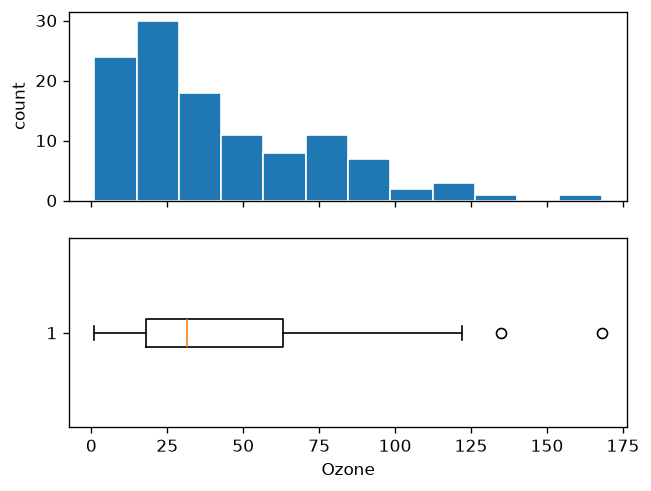

[5장] 결측값·이상값과 기술 통계
2027학년도 「빅데이터개론」의 준비 중인 교재입니다. 편집 상태를 검토하기 위해 미리 공개한 것으로, 수업 전에 내용과 순서가 바뀔 수 있습니다.
학사 6주차 · 교재 05 · 3부 데이터 분석 · ADsP 3과목 데이터분석 > R기초와 데이터 마트 (결측값 처리와 이상값 검색), 통계분석 (기초 통계분석 가운데 기술 통계)
분석에 쓰는 표에는 빈칸이 있고, 다른 값들과 동떨어진 값이 섞여 있다. 빈칸을 결측값, 동떨어진 값을 이상값이라 한다. 이 장은 결측값과 이상값을 찾아 처리하는 방법과, 자료의 분포를 몇 개의 수와 그림으로 요약하는 기술 통계를 다룬다. 교재 04에서 만든 분석용 표를 분석에 넣기 전에 점검하는 단계에 해당한다. 교재 04의 고객별 마트에서 거래가 없는 고객 네 명의 요약 변수가 결측값으로 남았던 것이 이 장의 출발점이다.
시험은 결측값을 채우는 방법의 이름과 장단점, 이상값을 판정하는 기준, 통계량의 뜻을 묻는다. R의 summary() 출력과 상자그림을 읽는 문항도 자주 나온다. 분석은 파이썬으로 실행하고, 장의 끝에서 같은 일을 하는 R 코드와 출력을 해석한다. 그래프를 그리는 코드는 노트북에 완성되어 있으며, 이 장에서는 그림을 읽는 법을 다룬다.
학습 목표
- 히스토그램과 상자그림에서 분포의 중심, 흩어진 정도, 치우침, 이상값을 읽는다.
- 기술 통계량(평균, 중앙값, 최빈값, 분산, 표준편차, 범위, 사분위수, 변동 계수)의 뜻을 구분하고, 왜도의 부호와 평균·중앙값·최빈값의 크기 순서를 짝짓는다.
- 결측값을 확인하고, 결측의 유형(MCAR, MAR, MNAR)을 구분하며, 완전 사례 분석, 평균 대치법, 단순 확률 대치법, 다중 대치법의 차이와 장단점을 근거로 유형에 맞는 처리 방법을 고른다.
- 표준편차 기준과 사분위수 범위 기준으로 이상값을 찾고, 절단과 조정을 구분한다.
- R의
summary()출력과 상자그림에서 결측 수, 사분위수, 이상값을 읽는다.
수업의 흐름
- 시작하기(0절). 교재 04의 결론 셋을 되짚고, 노트북의 첫 코드 셀을 실행하여 라이브러리의 판과 자료 파일을 확인한다. 자료의 한 행이 무엇이고 몇 행이어야 하는지를 먼저 계산한다.
- 분포의 그림과 기술 통계(1~2절). 히스토그램과 상자그림으로 분포를 보고, 중심·흩어짐·모양의 통계량으로 같은 분포를 수로 요약한다. 이상값 하나가 어느 통계량을 바꾸는지 실행 전에 예상하고 확인한다.
- 결측값(3절). 결측값을 세고, 결측의 유형을 구분하고, 유형에 따라 처리 방법이 달라지는 까닭을 모의 실험의 출력으로 확인한다. 이 장에서 가장 많은 시간을 쓰는 절이다.
- 이상값(4절). 두 판정 기준으로 이상값을 찾고, 절단과 조정의 결과를 견준다. 이상값이 오류인지 실제 값인지를 가리는 기준을 정리한다.
- 중심 실습(5절). 네 열의 결측, 이상값, 기술 통계량을 한 장의 품질 점검표로 만들고, 결측의 유형을 추정하여 처리 방법을 정한다. 실습 끝의 복기에서 예상과 결과의 차이를 정리한다.
- R 출력 해석과 문항(6절, 주간 문항 세트).
summary(),is.na,boxplot.stats(), 상자그림을 읽고, 주간 문항 세트의 1~10번을 푼다. 연습 문제(8절)와 세트의 11~20번은 수업 뒤에 푼다.
제목 끝에 [선택]이 붙은 절(1.5절, 3.6절)은 3시간 수업에서 시간이 남을 때 다룬다. 다루지 못하면 혼자 읽고 노트북의 해당 셀을 실행한다.
준비 사항
| 항목 | 내용 |
|---|---|
| 실습 노트북 | ADsP_05주차_실습_학생용.ipynb. 「0. 시작하기」, 「따라 하기 1」~「따라 하기 4」, 「중심 실습」의 순서로 되어 있다 |
| 자료 | airquality.csv. 1973년 5월부터 9월까지 뉴욕에서 날마다 잰 대기 측정값 153행이다. 자료 폴더의 위치는 노트북 첫 코드 셀(「0. 시작하기」)의 DATA에 적혀 있다 |
| 앞 장과의 연계 | 교재 04의 read_csv, 열과 행의 선택, 그룹별 집계, isna()를 전제로 한다. describe()와 평균·중앙값은 「파이썬 기초」 13장에서 구해 보았다 |
| 실습 환경 | 접속과 자료를 받는 방법은 부록 A에 있다 |
0. 시작하기
0절은 세 단계로 이루어진다. 교재 04의 결론을 되짚고, 노트북을 열어 첫 코드 셀을 실행하고, 이번 장의 자료가 몇 행이어야 하는지를 계산한다.
0.1 교재 04의 되짚기
교재 04 「표 데이터와 데이터 마트」의 결론 가운데 이번 장과 이어지는 것은 다음 셋이다.
| 교재 04의 결론 | 한 줄 요약 | 이번 장과의 연결 |
|---|---|---|
| 분석 단위 | 표의 한 행이 나타내는 대상이다. 연산마다 “실행한 뒤 한 행이 무엇인가”를 묻는다 | 이번 장의 자료는 하루가 한 행이다. 결측 수와 이상값 수는 모두 “며칠인가”로 읽는다 |
| 결합과 결측값 | left 결합에서 짝이 없는 키의 열은 결측값(NaN)이 된다 |
교재 04의 마트에서 거래가 없는 고객 네 명의 구매횟수가 결측값이었다. 그 빈칸을 어떻게 다룰지가 이 장의 3절이다 |
count와 size |
count는 결측값이 아닌 값의 수, size는 행의 수다 |
2.1절의 describe()에서 count가 열마다 다른 까닭이 이것이다. 3.1절은 두 값의 차이로 달마다의 결측 수를 센다 |
- 확인 1 교재 04의 정리 표에서 위 세 결론을 찾았고, 교재 04의 마트에서
구매횟수가 결측값인 고객이 4명이었음을 확인하였다.
0.2 노트북 열기와 첫 셀 실행
- 부록 A의 방법으로 실습 환경에 접속하고
ADsP_05주차_실습_학생용.ipynb를 연다. - 「0. 시작하기」의 코드 셀을 고른 뒤
Shift+Enter로 실행한다. - 셀 왼쪽에 실행 번호가 붙고 출력이 두 줄 나왔는지 본다.
import os
import numpy as np
import pandas as pd
import matplotlib
import matplotlib.pyplot as plt
DATA = "../kit/data/ADsP_공통/" # 자료 폴더의 위치
print(pd.__version__, matplotlib.__version__, np.__version__)
print(os.path.exists(DATA + "airquality.csv"))3.0.3 3.11.0 2.4.6
True첫 줄은 차례로 pandas, matplotlib, NumPy의 판이다. 이 장은 그림을 그리는 matplotlib을 처음 쓰는 장이다. 상자그림을 가로로 눕히는 orientation 인자는 matplotlib 3.10에서 생겼으므로, 실습 환경의 판이 그보다 낮으면 1.2절의 셀이 오류를 낸다(5절 「막힐 때」). NumPy는 3.5절에서 직선의 기울기를 구할 때 쓴다. 둘째 줄이 False이면 DATA의 위치를 고친다.
[그림 자리: JupyterLab에서 그림이 출력된 노트북 화면] 「따라 하기 1」의 히스토그램과 상자그림 셀을 실행하여 셀 아래에 그림 두 장이 위아래로 나온 화면. 그림이 셀 출력 영역에 붙어 나오는 것과, 출력 영역을 접고 펴는 막대의 위치에 표시를 둔다. 찍을 곳: 학교 실습 환경의 JupyterLab(부록 A).
[최신 자료 자리: 실습 환경의 pandas, matplotlib, NumPy의 판] 노트북 첫 셀의 출력. 확인할 곳: pandas https://pandas.pydata.org/docs/ , matplotlib https://matplotlib.org/stable/ 의 문서 머리. 2026-11-15에 집필 환경은 pandas 3.0.3, matplotlib 3.11.0, NumPy 2.4.6이었다. matplotlib이 3.10보다 낮으면 1.2절과 5절 단계 3의 상자그림 셀을 고쳐야 하므로 수업 전에 다시 확인한다.
- 확인 2 첫 코드 셀의 출력이 판 세 개(집필 환경에서는
3.0.3 3.11.0 2.4.6)와True였다.
0.3 자료의 분석 단위
airquality는 하루가 한 행이다. 측정 기간은 5월 1일부터 9월 30일까지이므로, 실행하기 전에 행의 수를 달마다의 날 수로 계산할 수 있다. 5월 31일, 6월 30일, 7월 31일, 8월 31일, 9월 30일을 더하면 153일이다. 날짜마다 한 행이 빠짐없이 있다면 표는 153행이어야 한다. 행이 이보다 적으면 날짜가 통째로 빠진 것이고, 153행인데 칸이 비어 있으면 그날 일부 항목을 재지 못한 것이다. 두 경우는 다른 문제다. 앞의 것은 행의 누락이고 뒤의 것은 이 장에서 다루는 결측값이다.
- 확인 3 31 + 30 + 31 + 31 + 30 = 153을 계산하여 노트에 적었고, 1.1절의
air.shape가 이 값과 같은지 견주었다.
1. 히스토그램과 상자그림
배경과 쓰임. 분석의 첫 단계에서 자료의 분포를 그림으로 살피는 일을 탐색적 자료 분석이라 한다. 미국 국립표준기술연구소(NIST)의 통계 공학 안내서는 상자그림을 여러 집단의 위치와 변동을 견주는 그림으로 소개하고, 사분위수 범위의 1.5배와 3배를 경계로 삼아 바깥의 점을 작은 동그라미와 큰 동그라미로 구분해 그리는 방법을 설명한다. 공장의 품질 관리에서는 생산 라인별 측정값을, 교육 현장에서는 반별 점수를, 의료에서는 병원별 대기 시간을 상자그림으로 나란히 놓고 견준다. 히스토그램은 한 집단의 분포 모양(봉우리의 수, 치우침)을 자세히 볼 때 쓴다. 이 장의 자료는 대기 측정값이며, R 문서에 따르면 뉴욕주 보전국(오존)과 미국 국립기상청(기상 자료)의 측정값에서 가져온 것이다.
1.1 자료
이 장에서 쓰는 자료는 R에 들어 있는 airquality를 CSV로 내보낸 것이다. 하루가 한 행이고 열은 여섯이다.
| 열 | 뜻 |
|---|---|
Ozone |
오존 농도 (ppb). 오후 1시~3시의 평균 |
Solar.R |
일사량 (랭글리) |
Wind |
평균 풍속 (시속 마일) |
Temp |
최고 기온 (화씨) |
Month, Day |
월, 일 |
pd와 DATA는 0.2절의 셀이 정의하였다.
air = pd.read_csv(DATA + "airquality.csv")
print(air.shape)
print(air.head(6))(153, 6)
Ozone Solar.R Wind Temp Month Day
0 41.0 190.0 7.4 67 5 1
1 36.0 118.0 8.0 72 5 2
2 12.0 149.0 12.6 74 5 3
3 18.0 313.0 11.5 62 5 4
4 NaN NaN 14.3 56 5 5
5 28.0 NaN 14.9 66 5 65월 5일(4번 행)의 Ozone과 Solar.R에 적힌 NaN은 값이 비어 있다는 표시다. 이것이 결측값이며 3절에서 다룬다. 1절과 2절에서는 값이 있는 칸만으로 분포를 본다. 표의 숫자를 한 행씩 읽어서는 153일의 오존 농도가 어떤 모양으로 퍼져 있는지 알 수 없다. 분포를 한눈에 보는 그림이 히스토그램과 상자그림이다.
1.2 히스토그램
다음 그림의 위쪽이 오존 농도의 히스토그램이고 아래쪽이 상자그림이다. 두 그림은 가로축을 함께 쓴다.

히스토그램은 값의 범위를 같은 너비의 구간으로 나누고, 구간마다 그 안에 든 관측값의 수를 막대의 높이로 나타낸 그림이다.
| 읽을 것 | 보는 자리 | 이 그림 |
|---|---|---|
| 가로축 | 값의 구간 | 오존 농도. 1에서 168까지를 12개 구간으로 나누었다 |
| 세로축 | 그 구간에 든 관측값의 수(도수) | 가장 높은 막대는 왼쪽에서 둘째(약 15에서 29 사이)이고 높이는 30이다. 오존 농도가 이 구간에 든 날이 30일이라는 뜻이다 |
| 중심 | 막대가 높은 곳 | 값이 50 아래에 몰려 있다 |
| 흩어진 정도 | 막대가 놓인 범위의 너비 | 0 가까이에서 170 가까이까지 넓게 퍼져 있다 |
| 모양 | 좌우가 대칭인가, 한쪽으로 꼬리가 긴가 | 왼쪽에 높은 막대가 몰려 있고 오른쪽으로 낮은 막대가 길게 이어진다. 오른쪽으로 꼬리가 긴 분포다 |
히스토그램은 연속형 자료의 분포를 보는 그림이므로 막대 사이에 틈이 없다. 범주별 개수를 나타내는 막대그래프와 이 점이 다르다. 구간의 수를 바꾸면 막대의 높이와 그림의 인상이 달라지므로, 한 가지 구간 수만 보고 모양을 단정하지 않는다.
1.3 사분위수와 상자그림
사분위수는 자료를 크기 순서로 늘어놓고 넷으로 똑같이 나누는 세 값이다.
| 이름 | 기호 | 뜻 |
|---|---|---|
| 제1사분위수 | Q1 | 아래에서 25%가 되는 자리의 값 |
| 제2사분위수 (중앙값) | Q2 | 아래에서 50%가 되는 자리의 값. 한가운데의 값이다 |
| 제3사분위수 | Q3 | 아래에서 75%가 되는 자리의 값 |
oz = air["Ozone"].dropna() # 빈칸(결측값)을 뺀 오존 농도
q1 = oz.quantile(0.25)
q3 = oz.quantile(0.75)
print(q1, oz.quantile(0.5), q3)
upper = q3 + 1.5 * (q3 - q1) # 상한
print(upper, oz[oz <= upper].max(), oz.max()) # 상한, 상한 이하의 가장 큰 값(수염의 끝), 최댓값18.0 31.5 63.25
131.125 122.0 168.0오존 농도의 Q1은 18, 중앙값은 31.5, Q3는 63.25다. 오존 값이 있는 날의 절반은 31.5 이하이고, 4분의 1은 18 이하이며, 4분의 1은 63.25 이상이다. Q3에서 Q1을 뺀 값을 사분위수 범위(IQR, interquartile range)라 한다. 63.25 - 18 = 45.25다.
상자그림은 이 값들을 그림으로 옮긴 것이다. 위 그림의 아래쪽을 다음과 같이 읽는다.
| 요소 | 뜻 | 이 그림의 값 |
|---|---|---|
| 상자의 왼쪽 끝 | 제1사분위수(Q1) | 18 |
| 상자 안의 선(중앙선) | 중앙값 | 31.5 |
| 상자의 오른쪽 끝 | 제3사분위수(Q3) | 63.25 |
| 상자의 길이 | 사분위수 범위(IQR). 가운데 50%의 자료가 상자 안에 든다 | 45.25 |
| 수염 | 상자의 끝에서 사분위수 범위의 1.5배 안에 있는 관측값 가운데 가장 먼 값까지 그은 선 | 왼쪽은 1, 오른쪽은 122까지 |
| 수염 밖의 점 | 수염이 닿는 범위를 벗어난 값. 이상값으로 판정된 값이다 | 135, 168 |
[그림 자리: 상자그림의 각 부분에 이름을 붙인 도식] 가로로 눕힌 상자그림 하나에 Q1(18), median(31.5), Q3(63.25), IQR, lower fence(-49.875), upper fence(131.125), whisker end(122), outliers(135, 168)를 화살표로 표시한 도식. 상한(upper fence)은 점선으로만 그리고 수염은 그보다 짧은 122에서 끝나는 것을 보인다. 그림 안의 글자는 영문과 수만 쓴다. 만들 곳: 도식 편집기 또는 노트북의 상자그림에 주석을 더한 그림.
수염의 끝은 다음과 같이 정해진다.
- 상한을 구한다. Q3 + 1.5 × IQR = 63.25 + 1.5 × 45.25 = 131.125다.
- 상한 이하의 관측값 가운데 가장 큰 값을 찾는다. 122다. 오른쪽 수염은 상한인 131.125가 아니라 실제 관측값인 122까지 긋는다.
- 상한보다 큰 관측값 135와 168은 점으로 따로 찍는다.
- 왼쪽도 같다. 하한은 Q1 - 1.5 × IQR = 18 - 67.875 = -49.875다. 하한보다 작은 값이 없으므로 왼쪽 수염은 최솟값 1까지 긋고, 점은 찍히지 않는다.
상자그림에서 분포의 모양도 읽는다.
- 중앙선이 상자의 한가운데보다 왼쪽에 있고, 오른쪽 수염이 왼쪽 수염보다 훨씬 길다. 큰 값 쪽으로 자료가 길게 늘어져 있다는 뜻이며, 히스토그램의 오른쪽으로 긴 꼬리와 같은 내용이다.
- 상자그림의 중앙선은 평균이 아니라 중앙값이다. 평균의 위치는 상자그림에 나타나지 않는다.
- 상자그림은 세워서 그리기도 한다. 그때에는 상자의 아래 끝이 Q1, 위 끝이 Q3다.
- 상자그림은 자리를 적게 차지하므로 여러 열이나 여러 집단의 분포를 나란히 놓고 견주는 데 쓴다. 봉우리가 몇 개인지는 상자그림으로 알 수 없고 히스토그램으로 본다.
1.4 네 열의 분포
측정값이 든 네 열의 히스토그램을 한꺼번에 그리면 다음과 같다.

Ozone은 오른쪽으로 꼬리가 길다.Solar.R은 높은 막대가 오른쪽(200에서 280 사이)에 있고 낮은 막대가 왼쪽으로 이어진다. 왼쪽으로 꼬리가 긴 분포다.Wind는 10 근처를 중심으로 좌우가 비슷하다. 대칭에 가까운 분포다.Temp는 80 근처가 가장 높고 왼쪽이 조금 더 길다.
1.5 줄기-잎 그림 [선택]
줄기-잎 그림은 각 값을 앞자리(줄기)와 끝자리(잎)로 나누어, 줄기마다 잎을 옆으로 늘어놓은 그림이다. 잎이 늘어선 길이가 히스토그램의 막대 구실을 하면서 원래의 값도 그대로 보인다. 자료가 적을 때 쓰며, R에서는 stem()으로 그린다. 시험에서는 분포를 살펴보는 그림의 하나로 이름이 나온다.
따라 하기
예상. 실행하기 전에 다음 물음에 답을 적는다.
air.shape는 무엇일까. 0.3절의 계산과 1.1절의 열 이름으로 답한다.- 오존 농도처럼 작은 값이 많고 큰 값이 드문 자료에서, 상자그림의 중앙선은 상자의 가운데보다 왼쪽에 있을까 오른쪽에 있을까.
- 오른쪽 수염은 상한(Q3 + 1.5 × IQR)과 같은 자리에서 끝날까.
실행.
- 노트북의 「따라 하기 1」 셀을 차례로 실행한다.
- 히스토그램과 상자그림이 함께 그려진 그림에서 상자의 양 끝, 중앙선, 수염의 끝, 점 두 개의 위치를 위의 표와 견준다.
- 마지막 셀의
bins를5로, 다시30으로 바꾸어 그린 뒤12로 되돌린다.
결과와 해석.
- 확인 4
air가(153, 6)으로 나왔고, 4번 행의Ozone과Solar.R이NaN이었다. - 확인 5 사분위수가
18.0 31.5 63.25로 나왔다. - 확인 6 상한
131.125, 수염의 끝122.0, 최댓값168.0이 나왔고, 수염의 끝이 상한과 다른 값이었다. - 확인 7 구간 수를 5와 30으로 바꾸어도 높은 막대가 50 아래에 몰리고 오른쪽으로 꼬리가 길게 이어졌으나, 막대의 높이와 개수는 달라졌다.
복기. 표는 153행으로 0.3절의 계산과 같았으므로 날짜가 통째로 빠진 행은 없다. 빈칸은 행 안의 칸에만 있다. 중앙선은 상자의 왼쪽에 치우쳐 있었다. 값의 절반이 31.5 이하에 몰려 있는데 위쪽 4분의 1은 63.25에서 168까지 넓게 퍼져 있기 때문이다. 오른쪽 수염은 상한 131.125가 아니라 실제 관측값 122에서 끝났다. 상한은 계산한 경계일 뿐 관측값이 아니기 때문이다. 이 구분은 6.5절의 boxplot.stats()에서 $stats의 끝 값을 읽을 때 다시 쓰인다. 구간 수를 바꾸었을 때 그림의 인상이 달라진 것은, 히스토그램 한 장만으로 분포의 모양을 단정하지 말아야 하는 까닭이다.
2. 기술 통계
배경과 쓰임. 기술 통계는 자료를 몇 개의 수로 요약하여 다른 사람에게 전달하는 방법이다. 보고서의 첫 표는 대개 건수, 평균, 표준편차, 최솟값, 사분위수, 최댓값으로 된 요약표다. 어느 통계량을 대표값으로 쓸지는 분포의 모양으로 정한다. NIST의 통계 공학 안내서는 정규 분포에서는 평균, 중앙값, 최빈값이 같으므로 평균이 적절하지만, 꼬리가 두껍거나 극단값이 있는 자료에서는 순위에 바탕을 둔 중앙값이 평균보다 믿을 만하다고 설명한다. 치우친 분포에서는 어느 하나가 언제나 낫다고 할 수 없으므로 셋을 함께 보라고 한다. 소득, 주택 가격, 병원 대기 시간처럼 큰 값 쪽으로 꼬리가 긴 자료를 보고할 때 평균과 함께 중앙값을 적는 까닭이 여기에 있다. 교재 04의 거래 금액에서 평균(79,104.2원)이 중앙값(57,600원)보다 컸던 것도 같은 현상이다.
기술 통계는 자료의 분포를 몇 개의 수로 요약하는 일이다. 요약하는 수를 기술 통계량이라 하며, 중심의 위치를 나타내는 것, 흩어진 정도를 나타내는 것, 모양을 나타내는 것으로 나눈다.
2.1 요약표
pandas의 describe()는 열마다 여덟 가지 통계량을 한 표로 낸다.
Ozone Solar.R Wind Temp
count 116.00 146.00 153.00 153.00
mean 42.13 185.93 9.96 77.88
std 32.99 90.06 3.52 9.47
min 1.00 7.00 1.70 56.00
25% 18.00 115.75 7.40 72.00
50% 31.50 205.00 9.70 79.00
75% 63.25 258.75 11.50 85.00
max 168.00 334.00 20.70 97.00count는 값이 있는 칸의 수, std는 표준편차, 25%·50%·75%는 제1사분위수·중앙값·제3사분위수다. count가 열마다 다르다. 전체가 153행인데 Ozone은 116, Solar.R은 146이다. 모자라는 만큼이 결측값이다(3절). 평균과 표준편차는 값이 있는 칸만으로 계산된 것이다.
2.2 중심의 위치: 평균, 중앙값, 최빈값
| 통계량 | 뜻 | Ozone의 값 |
|---|---|---|
| 평균 | 모든 값을 더하여 값의 수로 나눈 것 | 42.13 |
| 중앙값 | 크기 순서로 놓았을 때 한가운데의 값. 값의 수가 짝수이면 가운데 두 값의 평균이다 | 31.5 |
| 최빈값 | 가장 자주 나온 값 | 23 |
세 값이 서로 다르다. 평균은 모든 값의 크기를 계산에 쓰므로, 매우 큰 값이 몇 개만 있어도 그쪽으로 끌려간다. 중앙값은 순서만 쓰므로 가장 큰 값이 얼마이든 변하지 않는다. 오존 농도는 큰 값 쪽으로 꼬리가 길어서 평균(42.13)이 중앙값(31.5)보다 크다. 이상값이 있거나 한쪽으로 치우친 자료에서는 중앙값이 “보통의 값”을 더 잘 나타낸다.
2.3 흩어진 정도: 분산, 표준편차, 범위, 사분위수 범위, 변동 계수
x = air["Ozone"]
print("mean ", round(x.mean(), 2)) # 평균
print("median", x.median()) # 중앙값
print("mode ", x.mode()[0]) # 최빈값
print("var ", round(x.var(), 2)) # 분산
print("std ", round(x.std(), 2)) # 표준편차
print("range ", x.max() - x.min()) # 범위
print("IQR ", x.quantile(0.75) - x.quantile(0.25)) # 사분위수 범위
print("CV ", round(x.std() / x.mean(), 3)) # 변동 계수mean 42.13
median 31.5
mode 23.0
var 1088.2
std 32.99
range 167.0
IQR 45.25
CV 0.783| 통계량 | 구하는 법 | 성질 |
|---|---|---|
| 분산 | 각 값에서 평균을 뺀 차이(편차)를 제곱하여 모두 더하고, 값의 수에서 1을 뺀 수로 나눈다 | 단위가 원래 단위의 제곱이다 |
| 표준편차 | 분산의 제곱근 | 단위가 원래 자료와 같다. 값들이 평균에서 보통 얼마나 떨어져 있는지를 나타낸다 |
| 범위 | 최댓값 - 최솟값 | 양 끝의 두 값만 쓰므로 이상값 하나에 크게 변한다 |
| 사분위수 범위 | Q3 - Q1 | 가운데 50%의 너비다. 양 끝의 값을 쓰지 않으므로 이상값의 영향을 거의 받지 않는다 |
| 변동 계수 | 표준편차 ÷ 평균 | 단위가 없다. 평균의 크기나 단위가 다른 자료의 흩어진 정도를 견줄 때 쓴다 |
분산 1088.2의 제곱근이 표준편차 32.99이고, 범위는 168 - 1 = 167이며, 변동 계수는 32.99 ÷ 42.13 ≈ 0.783이다. pandas의 var()와 std()는 값의 수에서 1을 뺀 수로 나누는 표본 분산과 표본 표준편차이며, R의 var(), sd()도 같다.
표준편차만으로는 단위가 다른 열을 견줄 수 없다. Ozone의 표준편차는 32.99이고 Temp의 표준편차는 9.47이지만, 두 열은 단위도 평균의 크기도 다르다. 네 열의 변동 계수는 다음과 같다.
Ozone 0.783
Solar.R 0.484
Wind 0.354
Temp 0.122
dtype: float64평균에 견준 흩어짐은 오존 농도가 가장 크고 기온이 가장 작다.
이상값의 영향을 실제로 확인한다. 오존 농도의 최댓값 168을 1,680으로 잘못 적었다고 하고, 고치기 전과 후의 평균, 중앙값, 표준편차, 사분위수 범위를 차례로 낸다.
42.13 55.16
31.5 31.5
32.99 155.26
45.25 45.25값 하나를 잘못 적었을 뿐인데 평균은 42.13에서 55.16으로, 표준편차는 32.99에서 155.26으로 커졌다. 중앙값과 사분위수 범위는 그대로다. 가장 큰 값은 바뀌어도 가장 큰 값이므로 크기 순서가 변하지 않기 때문이다. 이상값의 영향을 받는 정도로 통계량을 나누면 다음과 같다. 시험에서 자주 묻는 구분이다.
| 이상값의 영향을 크게 받는다 | 이상값의 영향을 덜 받는다 |
|---|---|
| 평균, 분산, 표준편차, 범위 | 중앙값, 사분위수, 사분위수 범위 |
2.4 모양: 왜도와 첨도
왜도는 분포가 좌우로 치우친 정도를 나타내고, 첨도는 분포의 봉우리가 뾰족한 정도와 꼬리의 두께를 나타낸다.
shape = pd.DataFrame({
"mean": air[cols].mean(),
"median": air[cols].median(),
"mode": air[cols].mode().loc[0], # 최빈값이 여럿이면 가장 작은 것
"skew": air[cols].skew(), # 왜도
"kurt": air[cols].kurt(), # 첨도 (정규 분포가 0이 되게 3을 뺀 값)
})
print(shape.round(2)) mean median mode skew kurt
Ozone 42.13 31.5 23.0 1.24 1.29
Solar.R 185.93 205.0 238.0 -0.43 -0.97
Wind 9.96 9.7 11.5 0.35 0.11
Temp 77.88 79.0 81.0 -0.38 -0.40왜도의 부호는 꼬리가 긴 방향을 가리킨다. 평균은 꼬리 쪽으로 끌려가고 최빈값은 봉우리에 남으므로, 세 값의 크기 순서가 왜도의 부호에 따라 정해진다.
| 왜도 | 분포의 모양 | 크기 순서 |
|---|---|---|
| 양수 | 오른쪽으로 꼬리가 길다. 봉우리가 왼쪽에 있다 | 최빈값 < 중앙값 < 평균 |
| 0 | 좌우 대칭이다 | 평균 = 중앙값 = 최빈값 |
| 음수 | 왼쪽으로 꼬리가 길다. 봉우리가 오른쪽에 있다 | 평균 < 중앙값 < 최빈값 |
Ozone은 왜도가 1.24로 양수이고, 최빈값 23 < 중앙값 31.5 < 평균 42.13이다.Temp는 왜도가 -0.38로 음수이고, 평균 77.88 < 중앙값 79 < 최빈값 81이다.Solar.R도 음수이고 순서가 같다.Wind는 왜도가 0.35로 0에 가깝다. 평균(9.96)이 중앙값(9.7)보다 조금 크지만 최빈값(11.5)은 그보다 크다. 치우침이 약한 자료에서는 위의 크기 순서가 꼭 지켜지지는 않는다. 시험은 치우침이 뚜렷한 경우를 전제로 순서를 묻는다.
첨도는 정규 분포를 기준으로 읽는다. 정규 분포의 첨도는 3이고, 3보다 크면 정규 분포보다 봉우리가 뾰족하고 꼬리가 두꺼우며, 3보다 작으면 봉우리가 납작하다. 정규 분포가 0이 되도록 3을 빼고 적는 방식(초과 첨도)도 있다. pandas 문서에 따르면 kurt()는 이 방식(Fisher의 정의)이다. 이때에는 0보다 큰가 작은가로 읽는다. 위 표에서 Ozone은 1.29로 정규 분포보다 뾰족하고, Solar.R은 -0.97로 납작하다. 1.4절의 히스토그램에서 Solar.R의 막대 높이가 고른 것과 맞는다. 문항이 첨도의 기준을 3으로 두었는지 0으로 두었는지는 보기의 문장에서 확인한다.
[그림 자리: 왜도의 부호에 따른 평균, 중앙값, 최빈값의 위치 도식] 오른쪽으로 꼬리가 긴 분포, 좌우 대칭 분포, 왼쪽으로 꼬리가 긴 분포의 곡선 셋을 나란히 그리고, 곡선마다 mode, median, mean의 위치에 세로선을 그은 도식. 꼬리 쪽으로 평균이 끌려가는 것을 화살표로 보인다. 그림 안의 글자는 영문(mode, median, mean, skew > 0, skew = 0, skew < 0)으로 쓴다. 만들 곳: 도식 편집기 또는 matplotlib.
따라 하기
예상. 실행하기 전에 다음 물음에 답을 적는다.
describe()의count는 네 열에서 모두 153일까. 1.1절의 출력에서NaN이 있던 열을 근거로 답한다.- 최댓값 168을 1,680으로 잘못 적으면 평균, 중앙값, 표준편차, 사분위수 범위 가운데 어느 것이 바뀔까.
- 네 열 가운데 왜도가 음수일 열은 무엇일까. 1.4절의 히스토그램에서 꼬리가 왼쪽으로 긴 열을 찾는다.
실행.
- 노트북의 「따라 하기 2」 셀을 차례로 실행한다.
- 분산의 출력값에 제곱근을 씌우면 표준편차가 되는지 계산기로 확인한다.
- 최댓값을 잘못 적은 경우의 출력에서 바뀐 통계량과 바뀌지 않은 통계량을 나누어 적는다.
결과와 해석.
- 확인 8
describe()의count가Ozone116,Solar.R146,Wind와Temp153으로 나왔다. - 확인 9
var가1088.2,std가32.99,CV가0.783으로 나왔다. - 확인 10 네 열의 변동 계수 가운데
Temp의0.122가 가장 작았다. - 확인 11 최댓값을 1680으로 바꾸면 평균이
55.16, 표준편차가155.26으로 커졌고, 중앙값31.5와 사분위수 범위45.25는 그대로였다. - 확인 12
Ozone의skew가1.24로 나왔고,mode23.0 <median31.5 <mean42.13이었다.
복기. count가 열마다 다른 것은 describe()가 결측값을 빼고 세기 때문이며, 교재 04의 count와 같은 이치다. 값 하나를 잘못 적었을 때 바뀐 것은 평균과 표준편차이고, 바뀌지 않은 것은 중앙값과 사분위수 범위였다. 값의 크기를 계산에 쓰는 통계량은 이상값에 민감하고, 순서만 쓰는 통계량은 둔감하다. 이 구분이 4절에서 두 판정 기준(표준편차 기준, 사분위수 범위 기준)의 성질이 다른 까닭이 된다. 왜도가 음수인 열은 Solar.R과 Temp였다. Temp의 히스토그램은 꼬리가 왼쪽으로 “조금” 길었을 뿐인데도 부호가 음수로 나왔다. 왜도의 부호는 치우침의 방향을, 절댓값은 정도를 말한다.
3. 결측값
배경과 쓰임. 결측값은 거의 모든 실제 자료에 있다. 설문에는 답하지 않은 문항이 있고, 센서는 고장 나거나 통신이 끊기며, 여러 시스템의 표를 결합하면 짝이 없는 칸이 생긴다(교재 04). 결측값을 어떻게 다루느냐에 따라 평균과 표준편차, 나아가 회귀 계수와 검정의 결론까지 달라진다. 통계학에서 결측값 처리의 출발점은 Rubin(1976)의 논문 「Inference and Missing Data」다. 이 논문은 값이 비게 된 과정(결측의 메커니즘)을 분류하고, 어떤 조건에서 그 과정을 무시하고 분석해도 되는지를 밝혔다. 오늘날 결측의 유형을 MCAR, MAR, MNAR의 셋으로 나누는 것이 이 틀이며(3.4절), van Buuren의 교과서 『Flexible Imputation of Missing Data』(2판, 2018)는 이 분류를 바탕으로 대치 방법을 고르는 기준을 정리한다. 이 장은 그 기준 가운데 시험과 실무에 필요한 부분만 다룬다.
3.1 결측값의 확인
결측값은 값이 있어야 할 칸이 비어 있는 것이다. 측정 기기가 멈추었거나, 응답자가 답하지 않았거나, 입력에서 빠졌을 때 생긴다. pandas에서는 NaN으로 나타난다. isna()는 칸마다 비어 있으면 True를 내고, sum()은 True의 수를 센다.
print(air.isna().sum())
print(air.isna().any(axis=1).sum())
print(round(air["Ozone"].isna().mean() * 100, 1))Ozone 37
Solar.R 7
Wind 0
Temp 0
Month 0
Day 0
dtype: int64
42
24.2Ozone에 37개, Solar.R에 7개가 있다. any(axis=1)은 행마다 빈칸이 하나라도 있으면 참을 내므로, 결측값이 있는 행은 42행이다. 37 + 7 = 44보다 작은 것은 두 열이 함께 빈 행이 둘 있기 때문이다. 참·거짓의 평균은 참의 비율이므로 isna().mean()은 결측 비율이 된다. Ozone의 결측 비율은 37 ÷ 153 ≈ 24.2%다.
결측값의 수만 보지 않고 어디에 몰려 있는지도 본다. 달마다 날 수(size)와 오존 값이 있는 날 수(count)를 견준다.
size count mean
Month
5 31 26 23.62
6 30 9 29.44
7 31 26 59.12
8 31 26 59.96
9 30 29 31.456월은 30일 가운데 9일만 값이 있다. 결측값 37개 가운데 21개가 6월에 몰려 있다. 결측값이 표 전체에 고르게 흩어져 있지 않으면, 어떻게 처리하느냐에 따라 결과가 한쪽으로 기울 수 있다. pandas의 mean(), std(), describe()는 결측값을 빼고 계산한다. R은 이 점이 다르다(6.4절).
3.2 처리 방법
결측값을 처리하는 방법은 크게 지우는 것과 채우는 것으로 나뉜다. 빈칸을 어떤 값으로 채우는 일을 대치(imputation)라 한다.
| 방법 | 내용 |
|---|---|
| 완전 사례 분석 | 결측값이 하나라도 있는 행을 지우고, 모든 칸이 채워진 행만으로 분석한다. 완전 분석법이라고도 한다 |
| 평균 대치법 | 관측된 값의 평균으로 빈칸을 채운다. 두 가지가 있다 |
| ㆍ비조건부 평균 대치법 | 그 열에서 관측된 값 전체의 평균으로 채운다 |
| ㆍ조건부 평균 대치법 | 다른 변수의 값을 조건으로 삼아 구한 값으로 채운다. 다른 변수로 만든 회귀식의 예측값을 채우는 것이 대표적이다(회귀 대치법) |
| 단순 확률 대치법 | 평균처럼 정해진 한 값이 아니라 확률적으로 고른 값으로 채운다. 같은 자료 안에서 비슷한 관측값을 골라 그 값을 가져오는 핫덱(hot-deck) 방법, 거리가 가장 가까운 관측값(또는 가까운 k개)의 값을 쓰는 최근접 이웃(nearest neighbor) 방법이 있다 |
| 다중 대치법 | 대치를 한 번이 아니라 여러 번 하여 완전한 자료를 여러 벌 만들고, 그 결과를 합친다 |
빈칸마다 값을 하나만 정하는 방법(완전 사례 분석, 평균 대치법, 단순 확률 대치법)을 묶어서 단순 대치법이라 한다. 다중 대치법은 다음 세 단계로 진행한다. 단계의 이름과 순서를 묻는 문항이 나온다.
- 대치: 빈칸을 확률적으로 채운 완전한 자료를 여러 벌(m벌) 만든다. 벌마다 채워진 값이 조금씩 다르다.
- 분석: m벌의 자료를 각각 같은 방법으로 분석한다. 결과가 m개 나온다.
- 결합: m개의 결과를 하나로 합친다. 결과들이 서로 다른 정도가 대치의 불확실성으로 반영된다.
3.3 방법의 비교
행을 지우는 방법과 평균으로 채우는 방법을 실제로 견준다. dropna()는 결측값이 하나라도 있는 행을 지우고, fillna()는 빈칸을 주어진 값으로 채운다.
deleted = air.dropna() # 결측값이 하나라도 있는 행을 지운다 (완전 사례 분석)
filled = air.fillna(air.mean()) # 결측값을 그 열의 평균으로 채운다 (평균 대치법)
print(deleted.shape, filled.shape)(111, 6) (153, 6)행을 지우면 153행이 111행으로 줄어든다. 3.1절에서 센 42행, 곧 27%가 넘는 자료를 잃는다. 평균으로 채우면 153행이 그대로 남는다. 두 방법으로 처리한 뒤의 평균과 표준편차를 처리하기 전(raw)과 나란히 놓는다.
mean_raw mean_del mean_fill std_raw std_del std_fill
Ozone 42.13 42.10 42.13 32.99 33.28 28.69
Solar.R 185.93 184.80 185.93 90.06 91.15 87.96
Wind 9.96 9.94 9.96 3.52 3.56 3.52
Temp 77.88 77.79 77.88 9.47 9.53 9.47- 행을 지우면 결측값이 없는 열의 값도 바뀐다.
Wind와Temp에는 결측값이 없는데도 평균이 9.96에서 9.94로, 77.88에서 77.79로 바뀌었다. 다른 열의 빈칸 때문에 지워진 42행에 들어 있던 풍속과 기온을 함께 잃었기 때문이다. - 평균으로 채우면 평균은 그대로이고 표준편차는 줄어든다.
Ozone의 평균은 42.13 그대로인데 표준편차는 32.99에서 28.69로 줄었다. 빈칸 37개가 모두 평균과 같은 값으로 채워져, 평균에서 떨어진 정도가 0인 값이 37개 늘었기 때문이다. 자료가 실제보다 덜 흩어진 것으로 나타난다.
다음은 조건부 평균 대치법이다. 전체 평균 대신 같은 달의 평균으로 채운다. 5월의 빈칸은 5월 평균 23.62로, 6월의 빈칸은 6월 평균 29.44로 채워진다.
month_mean = air.groupby("Month")["Ozone"].transform("mean") # 행마다 그 달의 오존 평균을 적은 열
filled_month = air["Ozone"].fillna(month_mean) # 빈칸을 그 달의 평균으로 채운다
print(round(filled_month.mean(), 2), round(filled_month.std(), 2))40.85 29.6transform("mean")은 그룹별 평균을 원래 표의 행마다 되돌려 적는다. 평균이 42.13에서 40.85로 내려갔다. 결측값이 몰려 있는 6월의 평균이 전체 평균보다 낮기 때문이다. 전체 평균으로 채우면 6월의 21일에 6월의 다른 날들보다 높은 값을 넣게 된다. 다른 변수(달)의 정보를 쓰면 이런 치우침을 줄일 수 있다. 표준편차는 29.6으로, 전체 평균으로 채웠을 때(28.69)보다는 크지만 처리하기 전(32.99)보다는 여전히 작다.
방법별 장단점은 다음과 같다.
| 방법 | 장점 | 단점 |
|---|---|---|
| 완전 사례 분석 | 간단하다. 채워 넣은 값이 없다 | 자료를 잃어 분석의 효율이 떨어진다. 결측값이 특정 조건에 몰려 있으면 남은 자료가 한쪽으로 치우친다 |
| 비조건부 평균 대치법 | 간단하다. 행을 잃지 않고 평균이 유지된다 | 흩어진 정도가 실제보다 작게 나온다. 그래서 추정량의 표준 오차가 작게 추정된다. 다른 변수와의 관계가 약해진다 |
| 조건부 평균 대치법 | 다른 변수의 정보를 쓰므로 비조건부보다 실제에 가까운 값을 넣는다 | 채운 값이 회귀식 위에 놓이므로 흩어진 정도가 작게 나오는 문제가 남는다 |
| 단순 확률 대치법 | 평균 대치법에서 표준 오차가 작게 추정되는 문제를 보완하려고 고안되었다. 채우는 값이 한 점에 몰리지 않는다 | 대치를 한 번만 하므로 “채운 값이 틀릴 수 있다”는 불확실성이 결과에 드러나지 않는다 |
| 다중 대치법 | 대치의 불확실성을 결과의 표준 오차에 반영한다 | 절차가 복잡하고 계산이 많다 |
어느 방법이 언제나 옳은 것은 아니다. 결측값의 수가 적고 고르게 흩어져 있으면 행을 지워도 잃는 것이 적다. 결측 비율이 높거나 한곳에 몰려 있으면 지우는 방법과 전체 평균으로 채우는 방법 모두 결과를 왜곡할 수 있다. 교재 04의 마트에서 거래가 없는 고객의 구매횟수는 “모르는 값”이 아니라 실제로 0인 값이다. 이런 빈칸은 대치가 아니라 0으로 채우는 것이 뜻에 맞다. 빈칸이 생긴 까닭을 먼저 확인한다. 3.4절과 3.5절은 그 까닭을 분류하는 틀과, 분류에 따라 방법을 고르는 기준을 다룬다.
이 밖에 날짜 순서로 늘어선 자료에서는 바로 앞의 값으로 빈칸을 채우거나(pandas의 ffill) 앞뒤 값을 잇는 직선 위의 값으로 채우는(interpolate) 방법도 쓴다. pandas 사용자 안내서의 「Working with missing data」는 이 방법들을 dropna, fillna와 함께 소개하고, std() 같은 집계가 기본으로 결측값을 건너뛴다는 것도 적는다. 다만 앞의 값을 그대로 이어 쓰는 방법은 결측이 무작위로 생긴 경우에도 추정을 치우치게 할 수 있다는 지적이 있으므로(van Buuren, 1.3절), 측정값이 천천히 변하는 짧은 빈칸에만 쓴다.
3.4 결측의 유형
결측값을 어떻게 처리할지는 빈칸이 왜 생겼는가에 달려 있다. 값이 비게 될 확률이 무엇과 관계가 있는가에 따라 결측을 세 유형으로 나눈다.
| 유형 | 이름 | 빈칸이 생길 확률이 정해지는 방식 | 예 |
|---|---|---|---|
| MCAR | 완전 무작위 결측(missing completely at random) | 어느 관측값이나 같다. 자료의 어떤 값과도 관계가 없다 | 전산 장애로 하루치 기록이 사라졌다. 장애가 일어난 날은 측정값과 무관하다 |
| MAR | 무작위 결측(missing at random) | 관측된 다른 변수의 값에 따라 달라진다. 그 변수의 값이 같은 관측값끼리는 확률이 같다 | 나이가 많은 응답자일수록 온라인 설문의 마지막 문항을 비워 둔다. 나이는 모두 기록되어 있다 |
| MNAR | 비무작위 결측(missing not at random) | 비어 있는 값 그 자체나, 관측되지 않은 다른 요인에 따라 달라진다 | 소득이 높은 응답자일수록 소득 문항에 답하지 않는다. 빈칸의 값이 클수록 빌 확률이 높다 |
이름이 헷갈리기 쉽다. MAR은 “무작위”라는 말이 들어 있으나 아무렇게나 빠졌다는 뜻이 아니다. 관측된 변수를 고정하면 그 안에서는 무작위로 빠졌다는 뜻이다. van Buuren의 교과서는 MCAR을 “빌 확률이 모든 사례에서 같다”, MAR을 “관측된 자료로 정한 집단 안에서만 같다”, MNAR을 “우리가 모르는 까닭으로 달라진다”로 정리한다.
[그림 자리: 결측의 세 유형을 화살표로 나타낸 도식] 상자 셋(observed X, missing Y, missingness R)을 놓고, MCAR은 R로 들어오는 화살표가 없고, MAR은 X → R의 화살표만 있으며, MNAR은 Y → R의 화살표가 있는 세 칸의 도식. 칸마다 짧은 영문 설명(unrelated to data / depends on observed X / depends on missing Y itself)을 단다. 만들 곳: 도식 편집기.
세 유형을 자료만으로 완전히 가려낼 수는 없다. MCAR과 MAR은 관측된 변수로 단서를 얻을 수 있다. 빈칸이 있는 행과 없는 행에서 다른 변수의 분포를 견주어, 차이가 크면 MCAR이 아니라고 본다. 그러나 MNAR인지는 비어 있는 값을 모르므로 자료로 확인할 수 없고, 측정 과정에 대한 지식으로 판단한다. airquality의 오존 결측에 이 방법을 적용한다.
miss = air["Ozone"].isna() # 오존이 비어 있는 날이면 True
print(miss.sum())
print(air.groupby(miss)[["Solar.R", "Wind", "Temp"]].mean().round(2))37
Solar.R Wind Temp
Ozone
False 184.80 9.86 77.87
True 189.51 10.26 77.92groupby(miss)는 오존 값이 있는 날(False)과 빈 날(True)로 묶는다. 두 묶음의 일사량, 풍속, 기온의 평균은 거의 같다. 기온은 77.87과 77.92로 0.05밖에 다르지 않다. 이 세 변수로는 오존이 빈 날을 가려낼 수 없다. 그러나 3.1절의 달별 표에서는 빈칸 37개 가운데 21개가 6월에 있었다. 빈칸이 생길 확률이 관측된 변수인 달(Month)에 따라 다르므로, 오존의 결측은 MCAR로 보기 어렵고 달을 조건으로 한 MAR에 가깝다. 오존 측정 장비가 6월에 오래 멈추었을 가능성이 그 까닭으로 생각되나, 자료에는 기록이 없다. 이 판단은 “달을 알면 빈칸이 생길 확률이 정해진다”는 가정 위에 서 있으며, 높은 농도의 날에 장비가 멈추었다면(MNAR) 이 가정은 깨진다.
3.5 유형에 따른 처리 방법의 선택
세 유형에서 처리 방법이 결과를 어떻게 바꾸는지를, 정답을 아는 자료로 실험한다. 결측값이 없는 Temp 열에서 값을 세 가지 방식으로 일부러 지우고, 남은 값의 평균을 모든 값의 평균(참값)과 견준다.
| 실험 | 지우는 방식 | 유형 |
|---|---|---|
t_mcar |
무작위로 30%를 지운다 | MCAR |
t_mar |
풍속이 12 이상인 날의 기온을 지운다. 풍속은 관측되어 있다 | MAR |
t_mnar |
기온이 85를 넘는 날의 기온을 지운다 | MNAR |
예상. 실행하기 전에 세 실험에서 남은 값의 평균이 참값보다 클지, 작을지, 비슷할지를 적는다. 근거로 쓸 것은 둘이다. 풍속이 센 날은 대체로 기온이 낮고(두 변수의 관계를 수로 나타내는 상관 계수는 교재 07에서 다룬다), 기온이 높은 날을 지우면 남은 값은 낮은 값만 남는다.
t = air["Temp"] # 결측값이 없는 열
w = air["Wind"]
print(round(t.mean(), 2)) # 모든 값의 평균 (참값)
keep = t.sample(frac=0.7, random_state=1).index # 무작위로 고른 70%의 행 번호
t_mcar = t.where(t.index.isin(keep)) # 고르지 않은 30%를 지운다 (MCAR)
t_mar = t.where(w < 12) # 풍속이 12 이상인 날을 지운다 (MAR)
t_mnar = t.where(t <= 85) # 기온이 85를 넘는 날을 지운다 (MNAR)
for name, v in [("MCAR", t_mcar), ("MAR", t_mar), ("MNAR", t_mnar)]:
print(name, v.isna().sum(), round(v.mean(), 2))77.88
MCAR 46 78.83
MAR 38 79.8
MNAR 34 74.5where(조건)은 조건이 참인 칸은 그대로 두고 거짓인 칸을 결측값으로 바꾼다. 세 실험에서 지운 값은 46개, 38개, 34개다. 행을 지우는 완전 사례 분석에 해당하는 “남은 값의 평균”은 참값 77.88에 견주어 MCAR에서 78.83, MAR에서 79.8, MNAR에서 74.5다. MAR에서는 바람이 센(대체로 서늘한) 날이 빠져 평균이 올라갔고, MNAR에서는 더운 날이 빠져 평균이 내려갔다.
MCAR의 78.83도 참값과 0.95 다르다. 이 차이가 무작위로 고른 결과인지는 고르는 순서를 바꾸어 보면 알 수 있다.
for seed in [1, 2, 3, 4, 5]:
keep = t.sample(frac=0.7, random_state=seed).index
print(seed, round(t.where(t.index.isin(keep)).mean(), 2))1 78.83
2 77.37
3 77.93
4 77.66
5 77.77다섯 번의 평균이 77.37에서 78.83까지 참값의 위아래로 흩어진다. MCAR에서 생기는 차이는 이처럼 방향이 정해지지 않은 우연의 차이이고, 자료가 많을수록 줄어든다. MAR과 MNAR의 차이는 한쪽 방향으로 치우친 차이(편향)이며, 다시 뽑아도 같은 방향으로 나온다. van Buuren의 교과서도 완전 사례 분석이 MCAR에서는 평균, 분산, 회귀 계수를 치우침 없이 추정하지만, 그 밖의 경우에는 크게 치우칠 수 있다고 적는다.
이제 MAR과 MNAR의 빈칸을 두 방법으로 채운다. 남은 값의 평균으로 채우는 비조건부 평균 대치와, 관측된 풍속으로 기온을 설명하는 직선의 예측값으로 채우는 회귀 대치(조건부 평균 대치)다. np.polyfit(x, y, 1)은 직선의 기울기와 절편을 낸다. 직선을 구하는 원리는 교재 07에서 다룬다.
ok = t_mar.notna()
b, a = np.polyfit(w[ok], t_mar[ok], 1) # 풍속으로 기온을 설명하는 직선의 기울기와 절편
print("MAR ", round(t_mar.fillna(t_mar.mean()).mean(), 2), round(t_mar.fillna(a + b * w).mean(), 2))
ok = t_mnar.notna()
b, a = np.polyfit(w[ok], t_mnar[ok], 1)
print("MNAR", round(t_mnar.fillna(t_mnar.mean()).mean(), 2), round(t_mnar.fillna(a + b * w).mean(), 2))MAR 79.8 77.72
MNAR 74.5 75.01각 줄의 앞 값은 평균 대치, 뒤 값은 회귀 대치 뒤의 평균이다. 평균 대치는 남은 값의 평균으로 채우므로 평균이 바뀌지 않는다(79.8, 74.5). 치우침이 그대로 남는다. MAR에서는 회귀 대치가 평균을 77.72로 되돌려 참값 77.88에 가까워졌다. 빈칸이 생긴 까닭(풍속)이 관측되어 있으므로, 그 변수를 조건으로 채우면 치우침을 대부분 없앨 수 있다. MNAR에서는 회귀 대치도 75.01로 거의 나아지지 않았다. 빈칸이 생긴 까닭이 지워진 기온 자체여서, 관측된 풍속으로는 그 정보를 되살릴 수 없기 때문이다.
실험의 결과를 처리 방법의 선택 기준으로 정리하면 다음과 같다.
| 유형 | 완전 사례 분석 | 비조건부 평균 대치 | 조건부 대치(회귀, 같은 집단의 평균), 다중 대치 | 그 밖에 할 일 |
|---|---|---|---|---|
| MCAR | 평균의 치우침은 없다. 결측이 많으면 자료를 잃어 정밀도가 떨어진다 | 평균은 유지되나 표준편차가 작아진다 | 쓸 수 있다. 자료를 잃지 않는다 | 결측 비율이 낮으면 완전 사례 분석으로 충분하다 |
| MAR | 치우칠 수 있다 | 치우침이 그대로 남는다 | 빈칸과 관계있는 관측 변수를 조건으로 쓰면 치우침을 줄인다. 다중 대치법이 표준적인 방법이다 | 빈칸과 관계있는 변수를 찾는다(3.4절의 비교) |
| MNAR | 치우친다 | 치우친다 | 관측 변수로는 치우침을 없애지 못한다 | 빈칸이 생긴 원인에 대한 정보를 더 모으고, 빈칸의 값을 여러 가정으로 바꾸어 결론이 달라지는지 본다(민감도 분석) |
van Buuren의 교과서는 대부분의 간단한 처리 방법이 MCAR에서만 제대로 작동하며, 현대의 결측 처리 방법은 대개 MAR을 가정하고 출발한다고 적는다. 그러므로 실무에서는 먼저 MCAR인지를 의심하고, MAR이라면 빈칸과 관계있는 변수를 조건으로 채우며, MNAR이 의심되면 처리 방법보다 원인의 조사를 앞세운다.
판단의 예를 하나 든다. 어느 헬스장이 회원의 월별 방문 기록에서 체성분 측정값의 빈칸을 처리하려 한다. 측정 기계가 점검 때문에 둘째 주 내내 멈추어 그 주에 온 회원의 값이 빠졌다면, 빈칸은 회원의 체성분과 관계가 없으므로 MCAR에 가깝다. 빠진 비율이 낮으면 완전 사례 분석으로 충분하다. 고령 회원이 측정을 자주 건너뛰었고 나이는 모두 기록되어 있다면 MAR이다. 나이대별 평균으로 채우거나 나이를 넣은 다중 대치를 쓴다. 체중이 늘어난 회원이 측정을 피했다면 MNAR이다. 어떤 대치도 그 치우침을 없애지 못하므로, 측정을 건너뛴 까닭을 조사하고 결과를 해석할 때 한계로 밝힌다. 연습 문제 1번이 같은 판단을 요구한다.
3.6 단순 확률 대치와 다중 대치 [선택]
평균 대치는 빈칸을 모두 같은 값으로 채우므로 표준편차를 작게 만든다(3.3절). 단순 확률 대치는 관측된 값들 가운데에서 확률적으로 고른 값으로 채워 이 문제를 줄인다. 다음은 오존의 빈칸 37개를 관측된 오존 값 116개 가운데 무작위로 뽑은 값으로 채운 것이다. 핫덱 방법의 가장 단순한 꼴이다. 뽑는 순서(random_state)를 다섯 번 바꾸어 채운 자료 다섯 벌을 만든다.
oz_obs = air["Ozone"].dropna()
gap = air["Ozone"].isna()
for seed in [1, 2, 3, 4, 5]:
draw = oz_obs.sample(n=gap.sum(), replace=True, random_state=seed) # 관측값에서 37개를 뽑는다
hot = air["Ozone"].copy()
hot[gap] = draw.values # 빈칸에 뽑은 값을 넣는다
print(seed, round(hot.mean(), 2), round(hot.std(), 2))1 41.11 32.35
2 43.75 33.43
3 42.56 33.86
4 41.27 31.68
5 39.98 31.95다섯 벌의 표준편차는 31.68~33.86으로, 처리 전(32.99)과 비슷하고 평균 대치(28.69)보다 크다. 채운 값이 관측값처럼 흩어져 있기 때문이다. 다섯 벌의 평균은 39.98~43.75로 벌마다 다르다. 어느 한 벌만 쓰면 이 차이가 결과에 드러나지 않는다. 단순 확률 대치의 약점이 이것이다. 다중 대치법은 이렇게 만든 여러 벌을 모두 분석하고(분석 단계), 결과를 합치면서 벌 사이의 차이를 “빈칸의 값을 모른다는 불확실성”으로 표준 오차에 더한다(결합 단계). 이 예는 다중 대치의 대치 단계만 흉내 낸 것이다. 실제 다중 대치는 관측된 다른 변수(예: 달, 기온)를 조건으로 값을 뽑으며, 이 예처럼 달을 무시하고 뽑으면 3.4절에서 본 6월의 치우침이 그대로 남는다.
따라 하기
예상. 실행하기 전에 다음 물음에 답을 적는다.
- 결측값이 있는 행의 수는 37 + 7 = 44일까. 두 열이 함께 빈 행이 있을 수 있다는 점을 생각한다.
- 평균으로 채우면
Ozone의 표준편차는 커질까 작아질까. - 3.5절의 세 실험에서 남은 값의 평균은 참값과 견주어 어느 쪽으로 움직일까.
실행.
- 노트북의 「따라 하기 3」 셀을 차례로 실행한다.
- 달별 표에서
size와count의 차이를 더하여 37이 되는지 확인한다. - 비교표에서 결측값이 없는
Wind의 평균이 바뀐 칸을 찾는다. - 「결측의 유형」의 셀을 실행하고 3.4~3.5절의 출력과 견준다.
- [선택] 「단순 확률 대치와 다중 대치」의 셀을 실행한다.
결과와 해석.
- 확인 13 결측 수가
Ozone37,Solar.R7로 나왔고, 결측값이 있는 행이42,Ozone의 결측 비율이24.2였다. - 확인 14 6월의
count가9로 나왔고, 달별 차이 5 + 21 + 5 + 5 + 1 = 37이었다. - 확인 15
(111, 6) (153, 6)이 나왔고,Ozone의 표준편차가 처리 전32.99, 행 삭제 후33.28, 평균 대치 후28.69였다. - 확인 16 달의 평균으로 채운 결과가
40.85 29.6으로 나왔다. - 확인 17 오존이 빈 날과 값이 있는 날의
Temp평균이77.92와77.87로 거의 같았다. - 확인 18 세 실험에서 남은 값의 평균이
MCAR 46 78.83,MAR 38 79.8,MNAR 34 74.5로 나왔고,random_state를 바꾼 MCAR의 평균이 77.37~78.83 사이에 흩어졌다. - 확인 19 회귀 대치 뒤의 평균이 MAR에서
77.72, MNAR에서75.01이었다. - 확인 20 [선택] 다섯 벌의 표준편차가 31.68~33.86으로, 평균 대치의 28.69보다 컸다.
복기. 결측값이 있는 행은 44가 아니라 42였다. 열마다 센 결측 수를 더하면 두 열이 함께 빈 행을 두 번 센다. 교재 04에서 |로 이은 조건의 행 수를 셀 때 겹치는 행을 한 번 뺀 것과 같은 이치다. 평균 대치가 표준편차를 줄인다는 것은 예상하기 쉬우나, 행 삭제가 결측값이 없는 열의 평균까지 바꾼다는 것은 놓치기 쉽다. 3.5절의 실험에서 가장 중요한 관찰은 “처리 방법의 좋고 나쁨은 결측의 유형에 달려 있다”는 것이다. 같은 회귀 대치가 MAR에서는 치우침을 거의 없앴고 MNAR에서는 거의 효과가 없었다. 그러므로 처리 방법을 고르기 전에 빈칸이 왜 생겼는지를 먼저 묻는다.
4. 이상값
배경과 쓰임. 이상값의 판정은 두 가지 목적으로 쓰인다. 하나는 분석의 준비다. 입력 실수나 단위의 혼동으로 생긴 값을 찾아 평균과 회귀 계수가 왜곡되지 않게 한다. 다른 하나는 분석 그 자체다. 카드 결제의 부정 사용, 설비의 고장 징후, 네트워크의 침입처럼 평소와 다른 관측값을 찾는 일을 이상 탐지라 하며, 이때에는 이상값이 찾으려는 대상이다(4.4절). NIST의 통계 공학 안내서는 상자그림의 경계(사분위수 범위의 1.5배와 3배)를 그림으로 이상값을 살피는 방법으로, 일반화 ESD 검정을 자료가 정규 분포에 가깝다는 가정 아래 이상값을 검정하는 방법으로 소개한다. 어느 기준을 쓰든 기준은 후보를 골라 줄 뿐이고, 지울지 고칠지 남길지는 값이 생긴 까닭을 확인한 뒤에 정한다.
4.1 이상값의 뜻
이상값은 다른 관측값들과 동떨어져 있는 값이다. 이상값이 생기는 까닭은 여러 가지다.
- 입력이나 측정이 잘못되었다. 키 175를 1,750으로 적은 경우다.
- 분석하려는 대상이 아닌 값이 섞였다. 개인 고객의 구매 자료에 법인의 대량 구매가 들어간 경우다.
- 드물지만 실제로 일어난 일이다. 폭염이 온 날의 전력 사용량이 그렇다.
이상값은 평균과 표준편차를 크게 바꾸고(2.3절), 상관 계수와 회귀 계수에도 영향을 준다(교재 07). 그러므로 분석에 앞서 이상값을 찾아 두어야 한다.
4.2 판정 기준
어디서부터를 “동떨어졌다”고 볼지를 정하는 기준은 여러 가지이고, 다음 둘을 가장 많이 쓴다.
| 기준 | 이상값으로 보는 범위 |
|---|---|
| 표준편차 기준 | 평균에서 표준편차의 3배 넘게 떨어진 값. 곧 평균 - 3 × 표준편차보다 작거나 평균 + 3 × 표준편차보다 큰 값이다. ESD라고도 부른다 |
| 사분위수 범위 기준 | Q1 - 1.5 × IQR보다 작거나 Q3 + 1.5 × IQR보다 큰 값. 상자그림에서 수염 밖에 점으로 찍히는 값이 이 기준의 이상값이다 |
평균 대신 기하 평균을 쓰고 표준편차의 2.5배를 범위로 삼는 기준도 수험 자료에 소개된다. 기하 평균은 값을 모두 곱한 뒤 값의 수만큼 제곱근을 취한 것이어서 양수인 자료에만 쓸 수 있다. 이름만 알아 둔다.
사분위수 범위 기준을 오존 농도에 적용한다. col은 점검할 열이고 k는 사분위수 범위에 곱하는 배수다.
col = "Ozone" # 바꾸어 볼 값: "Wind", "Solar.R", "Temp"
k = 1.5 # 바꾸어 볼 값: 3.0, 1.0 (사분위수 범위에 곱하는 배수)
x = air[col]
q1 = x.quantile(0.25)
q3 = x.quantile(0.75)
iqr = q3 - q1
lower = q1 - k * iqr # 하한
upper = q3 + k * iqr # 상한
print("Q1", q1, " Q3", q3, " IQR", round(iqr, 3))
print("lower", round(lower, 3), " upper", round(upper, 3))
print(x[(x < lower) | (x > upper)]) # 하한보다 작거나 상한보다 큰 값Q1 18.0 Q3 63.25 IQR 45.25
lower -49.875 upper 131.125
61 135.0
116 168.0
Name: Ozone, dtype: float64하한은 -49.875, 상한은 131.125다. 이 범위를 벗어난 값은 61번 행의 135와 116번 행의 168, 둘이다. 1.3절의 상자그림에서 수염 밖에 찍힌 두 점이 이 값들이다. (x < lower) | (x > upper)는 교재 04의 3.2절에서 본 |(또는)로 이은 조건이다.
같은 열에 표준편차 기준을 적용한다.
m = x.mean()
s = x.std()
print(round(m - 3 * s, 2), round(m + 3 * s, 2))
print(x[(x < m - 3 * s) | (x > m + 3 * s)])-56.83 141.09
116 168.0
Name: Ozone, dtype: float64범위는 -56.83에서 141.09까지이고, 벗어난 값은 168 하나다. 135는 사분위수 범위 기준으로는 이상값이지만 표준편차 기준으로는 이상값이 아니다. 기준에 따라 판정이 달라진다.
- 표준편차 기준은 평균과 표준편차로 범위를 정한다. 그런데 평균과 표준편차 자체가 이상값의 영향을 받는다. 큰 이상값이 있으면 표준편차가 커져서 범위가 넓어지고, 그 결과 이상값이 범위 안에 들어가기도 한다. 자료가 정규 분포에 가깝다는 가정에 맞는 기준이다.
- 사분위수 범위 기준은 사분위수로 범위를 정하므로 이상값의 영향을 덜 받는다. 분포에 대한 가정이 필요하지 않으며, 분포가 한쪽으로 치우쳐 있어도 쓸 수 있다.
4.3 처리 방법: 절단과 조정
이상값으로 판정한 값을 처리하는 방법은 둘이다.
| 방법 | 내용 |
|---|---|
| 절단(trimming) | 이상값을 자료에서 지운다. 기준을 정하는 대신 위아래 몇 %(예: 위 5%와 아래 5%)를 잘라 내기도 한다 |
| 조정(winsorizing) | 이상값을 지우지 않고, 하한보다 작은 값은 하한으로, 상한보다 큰 값은 상한으로 바꾼다 |
trimmed = x[(x >= lower) & (x <= upper)] # 절단: 범위 밖의 값을 지운다
adjusted = x.clip(lower, upper) # 조정: 범위 밖의 값을 하한이나 상한으로 바꾼다 raw trimmed adjusted
count 116.00 114.00 116.00
mean 42.13 40.21 41.78
std 32.99 29.79 31.83
min 1.00 1.00 1.00
25% 18.00 18.00 18.00
50% 31.50 30.50 31.50
75% 63.25 60.50 63.25
max 168.00 122.00 131.12- 절단하면 값의 수가 116에서 114로 줄고, 최댓값은 남은 값 가운데 가장 큰 122가 된다.
- 조정하면 값의 수는 116 그대로이고, 135와 168이 상한 131.125로 바뀐다(표에는 131.12로 적혔다). 값의 순서가 유지되므로 중앙값과 사분위수는 처리하기 전과 같다.
- 평균은 42.13에서 절단 40.21, 조정 41.78로, 표준편차는 32.99에서 절단 29.79, 조정 31.83으로 줄었다. 조정이 절단보다 원래 자료에서 덜 벗어난다.
절단은 자료를 잃는다. 조정은 자료의 수를 지키므로, 이상값이 있는 행의 다른 열까지 버리지 않아도 된다.
4.4 이상값과 오류
이상값이 반드시 오류인 것은 아니다. 기준은 “동떨어진 값”을 골라 줄 뿐이고, 그 값을 어떻게 할지는 값이 생긴 까닭을 확인한 뒤에 정한다.
| 이상값의 성격 | 예 | 처리 |
|---|---|---|
| 입력·측정의 오류 | 나이가 250으로 적혀 있다 | 바른 값으로 고친다. 알 수 없으면 지우거나 결측값으로 바꾼다 |
| 분석 대상이 아닌 값 | 개인 고객 자료에 섞인 법인의 대량 구매 | 분석에서 뺀다 |
| 실제로 일어난 드문 값 | 폭염이 온 날의 전력 사용량 | 지우지 않는다. 조정하거나, 이상값의 영향을 덜 받는 통계량(중앙값, 사분위수 범위)을 쓴다 |
| 찾으려는 대상 | 신용카드의 부정 사용, 설비의 고장 징후, 불량품 | 지우지 않는다. 이상값을 찾는 것이 분석의 목적이다 |
넷째의 예가 부정 사용 탐지다. 평소의 결제 금액과 장소에서 크게 벗어난 거래가 부정 사용일 가능성이 높으므로, 이상값을 지우면 찾으려던 것을 버리게 된다. 노트북의 마지막 셀은 이상값으로 판정된 날의 날짜를 낸다.
Month Day Ozone
61 7 1 135.0
116 8 25 168.0오존 농도의 135와 168은 7월 1일과 8월 25일의 값이다. 여름에 오존 농도가 높은 날은 실제로 있을 수 있으므로, 이 두 값을 기준에 걸렸다는 까닭만으로 지우지 않는다.
따라 하기
예상. 실행하기 전에 다음 물음에 답을 적는다.
- 오존 농도에서 사분위수 범위 기준과 표준편차 기준은 같은 값을 이상값으로 고를까. 표준편차 자체가 큰 값에 끌려간다는 2.3절의 결과를 근거로 삼는다.
- 절단한 뒤와 조정한 뒤에 각각 값의 수와 중앙값은 바뀔까.
k를 3.0으로 키우면 이상값의 수는 늘어날까 줄어들까.
실행.
- 노트북의 「따라 하기 4」 셀을 차례로 실행한다.
col = "Wind"로 바꾸고 「따라 하기 4」의 셀을 다시 실행하여 하한, 상한, 이상값을 적는다. 적은 뒤"Ozone"으로 되돌린다.k = 3.0으로 바꾸고Ozone의 이상값이 몇 개인지 본 뒤1.5로 되돌린다.
- 확인 21
Ozone의 하한-49.875, 상한131.125가 나왔고, 이상값이 135와 168이었다. - 확인 22 표준편차 기준의 범위가
-56.83 141.09로 나왔고, 이상값이 168 하나였다. - 확인 23 절단한 열의
count가114,max가122.00, 조정한 열의max가131.12였다. - 확인 24 이상값의 날짜가 7월 1일과 8월 25일로 나왔다.
복기. 두 기준의 판정이 달랐다. 사분위수 범위 기준은 135와 168을, 표준편차 기준은 168만 골랐다. 큰 값이 표준편차를 키워 경계(141.09)가 넓어졌기 때문이다. 값 하나가 기준 자체를 움직인다는 점이 표준편차 기준의 약점이다. 절단은 값의 수를 줄이고 중앙값도 바꾸었으나(31.5 → 30.5), 조정은 값의 수와 순서를 그대로 두므로 중앙값이 바뀌지 않았다. k를 키우면 경계가 바깥으로 물러나므로 이상값은 줄어든다. NIST 안내서가 1.5배 밖의 점과 3배 밖의 점을 다른 기호로 그리는 까닭은, 3배 밖의 점이 훨씬 드문 극단값이기 때문이다. 기준을 바꾸면 이상값의 수가 바뀌므로, 보고서에는 어느 기준으로 센 수인지를 함께 적는다.
5. 중심 실습: 데이터 품질 점검표의 작성
분석에 앞서 표의 상태를 한 장으로 정리한 것이 데이터 품질 점검표다. airquality의 측정값 네 열에 대하여 결측 수, 이상값 수, 기술 통계량을 한 표로 만들고 상자그림으로 확인한 뒤, 결측의 유형을 추정하여 처리가 가장 필요한 열과 처리 방법을 정한다. 단계마다 실행하기 전에 “예상”의 물음에 답을 적고, 실행한 뒤에 출력과 견준다.
준비
- 노트북
ADsP_05주차_실습_학생용.ipynb에서 「따라 하기 1」~「따라 하기 4」를 실행한 상태에서 시작한다.col은"Ozone",k는1.5로 되돌려 둔다. - 아래의 빈 점검표를 노트에 옮겨 둔다.
| 열 | 결측 수 | 결측 비율(%) | 이상값 수 | 평균 | 중앙값 | 표준편차 | 왜도 | 분포의 모양 | 결측의 유형(추정) | 처리 방법 |
|---|---|---|---|---|---|---|---|---|---|---|
Ozone |
37 | 24.2 | 2 | 42.13 | 31.5 | 32.99 | 1.24 | 오른쪽으로 긴 꼬리 | ||
Solar.R |
||||||||||
Wind |
||||||||||
Temp |
첫 행의 아홉 칸은 예시다. 분포의 모양은 왜도의 부호와 상자그림을 보고 “오른쪽으로 긴 꼬리”, “왼쪽으로 긴 꼬리”, “대칭에 가깝다” 가운데 하나로 적는다. 마지막 두 칸은 단계 5에서 채운다. 결측값이 없는 열은 두 칸에 “해당 없음”을 적는다.
절차
단계 1. 열별 결측 수와 이상값 수
예상. n과 missing의 합은 열마다 얼마여야 하는가. 이상값이 있을 열은 1.4절의 히스토그램에서 꼬리가 긴 열 가운데 어느 것인가.
- 「중심 실습」의 첫 코드 셀을 실행한다. 이상값은 이 셀의
k로 센다. - 출력의
missing,missing_pct,outlier를 점검표의 해당 칸에 옮긴다.
k = 1.5 # 바꾸어 볼 값: 3.0, 1.0 (사분위수 범위에 곱하는 배수)
num = air[cols]
q1 = num.quantile(0.25)
q3 = num.quantile(0.75)
iqr = q3 - q1
outlier = (num < q1 - k * iqr) | (num > q3 + k * iqr) # 칸마다 이상값이면 True
count = pd.DataFrame({
"n": num.count(), # 값이 있는 칸의 수
"missing": num.isna().sum(), # 결측 수
"missing_pct": (num.isna().mean() * 100).round(1), # 결측 비율(%)
"outlier": outlier.sum(), # 이상값 수
})
print(count) n missing missing_pct outlier
Ozone 116 37 24.2 2
Solar.R 146 7 4.6 0
Wind 153 0 0.0 3
Temp 153 0 0.0 0q1, q3가 열마다의 값을 담은 Series이므로, 한 줄의 조건식이 네 열에 한꺼번에 적용된다. n과 missing의 합은 열마다 153이다.
- 확인 25 결측 수가 37, 7, 0, 0, 결측 비율이 24.2, 4.6, 0.0, 0.0, 이상값 수가 2, 0, 3, 0으로 나왔다.
단계 2. 기술 통계량
예상. 평균이 중앙값보다 작을 열은 어느 것인가. 2.4절의 왜도와 크기 순서의 관계를 쓴다.
- 다음 셀을 실행하여 평균, 중앙값, 표준편차, 왜도를 점검표에 옮긴다.
- 왜도의 부호로 분포의 모양 칸을 채운다.
mean median std skew
Ozone 42.13 31.5 32.99 1.24
Solar.R 185.93 205.0 90.06 -0.43
Wind 9.96 9.7 3.52 0.35
Temp 77.88 79.0 9.47 -0.38- 확인 26
Solar.R의 평균185.93이 중앙값205.0보다 작고 왜도가-0.43으로 음수였다.
단계 3. 상자그림으로의 확인
예상. 수염 밖의 점은 열마다 몇 개일까. 단계 1의 outlier를 근거로 답한다.
- 다음 셀을 실행하여 같은 배수
k로 그린 상자그림을 얻는다. - 열마다 수염 밖에 찍힌 점의 수를 세어 단계 1의
outlier와 견준다.

Solar.R은 중앙선이 상자의 가운데보다 위에 있고 아래쪽 수염이 길다. 왼쪽(작은 값 쪽)으로 꼬리가 긴 분포이며 왜도의 부호와 맞는다.
- 확인 27 수염 밖의 점이
Ozone2개,Wind3개였고,Solar.R과Temp에는 없어 단계 1의outlier와 같았다.
단계 4. 결측값 처리의 영향
예상. 한 열에서 결측값을 빼고 구한 평균은 처리 전의 평균과 같을까. 평균으로 채운 뒤의 값의 수는 몇일까.
- 다음 셀을 실행한다. 결측 수가 가장 많은 열을 골라, 처리 전, 결측값을 뺀 것, 평균으로 채운 것의 값의 수, 평균, 표준편차를 차례로 낸다.
- 평균 대치가 표준편차를 얼마나 줄였는지 계산한다.
Ozone
116 42.13 32.99
116 42.13 32.99
153 42.13 28.69결측 수가 가장 많은 열은 Ozone이다. 한 열에서 결측값을 빼는 것은 처리 전의 계산과 같다. pandas가 결측값을 빼고 계산하기 때문이다. 평균으로 채우면 값의 수는 153이 되고 평균은 같으나 표준편차가 32.99에서 28.69로 4.3 줄었다. 3.3절에서 표 전체의 행을 지웠을 때(111행)와는 다르다. 행을 지우면 다른 열의 값까지 함께 빠진다.
- 확인 28 결측 수가 가장 많은 열이
Ozone으로 나왔고, 평균 대치 뒤의 결과가153 42.13 28.69였다.
단계 5. 결측의 유형과 처리 방법의 선택
예상. Ozone의 빈칸이 6월에 몰려 있었다(3.1절). Solar.R의 빈칸도 같은 달에 몰려 있을까.
- 다음 셀을 실행하여 달마다 열별 결측 수를 센다.
- 결측값이 있는 두 열에 대하여 빈칸이 특정한 달에 몰려 있는지 본다.
- 3.4절의 기준으로 결측의 유형을 추정하고, 3.5절의 선택 기준표에서 처리 방법을 골라 점검표의 마지막 두 칸에 적는다.
print(air[cols].isna().groupby(air["Month"]).sum()) Ozone Solar.R Wind Temp
Month
5 5 4 0 0
6 21 0 0 0
7 5 0 0 0
8 5 3 0 0
9 1 0 0 0isna()로 만든 참·거짓의 표를 달로 묶어 더하면 달마다의 결측 수가 된다. 각 열을 세로로 더하면 37, 7, 0, 0으로 단계 1의 missing과 같다. Ozone의 빈칸은 6월에 21개가 몰려 있고, Solar.R의 빈칸 7개는 5월에 4개, 8월에 3개다. Solar.R은 빈칸이 적고 특정한 달에 크게 몰리지 않았으므로 MCAR에 가깝다고 볼 수 있다. 결측 비율이 4.6%이므로 그 열만 쓰는 분석에서는 결측값을 빼고 계산해도 잃는 것이 적다. Ozone은 3.4절에서 본 대로 달에 따라 빈칸이 생길 확률이 다르므로 MAR에 가깝다. 전체 평균으로 채우면 6월의 21일에 6월의 다른 날보다 높은 값을 넣게 되므로, 달을 조건으로 한 대치(3.3절의 달별 평균 대치)나 달과 기온 같은 관측 변수를 쓴 다중 대치가 알맞다.
- 확인 29 달별 결측 수에서
Ozone의 6월이21,Solar.R이 5월4, 8월3이었다.
단계 6. 점검표의 완성과 해석
- 점검표의 빈칸을 모두 채운다.
- 네 열 가운데 분석에 앞서 처리가 가장 필요한 열을 하나 고른다.
- 그 열의 결측 수와 이상값 수, 결측의 유형을 넣어, 어떻게 처리할지를 한 문장으로 쓴다. 처리 방법은 3.5절과 4.3~4.4절의 표에서 고르고 까닭을 함께 적는다.
- 확인 30 점검표의
Solar.R행이 7, 4.6, 0, 185.93, 205.0, 90.06, -0.43, 왼쪽으로 긴 꼬리로 채워졌다.
값을 바꾸어 보기
- 단계 1의
k를3.0으로 바꾸고 단계 1~3을 다시 실행한다. 네 열의 이상값 수는 각각 몇 개가 되는가. 상자그림의 수염은 어떻게 달라지는가. k를1.0으로 바꾼다. 이상값의 수는 늘어나는가 줄어드는가. 그 까닭은 무엇인가.k를1.5로 되돌리고, 「따라 하기 4」의col을"Wind"로 바꾸어 실행한다. 절단한 뒤의 최댓값과 조정한 뒤의 최댓값은 각각 얼마인가. 표준편차 기준으로는 몇 개가 이상값인가.
완료 기준
| 번호 | 점검 항목 | 점검 방법 | 기준 값 |
|---|---|---|---|
| 1 | 결측 수와 결측 비율 | 단계 1의 missing, missing_pct |
37, 7, 0, 0 / 24.2, 4.6, 0.0, 0.0 |
| 2 | 이상값 수(k = 1.5) |
단계 1의 outlier와 단계 3의 점 |
2, 0, 3, 0 |
| 3 | 기술 통계량 | 단계 2의 출력과 점검표 | 평균, 중앙값, 표준편차, 왜도가 출력과 같다 |
| 4 | 분포의 모양 | 왜도의 부호와 상자그림 | Ozone 오른쪽으로 긴 꼬리, Solar.R 왼쪽으로 긴 꼬리 |
| 5 | 결측값 처리의 영향 | 단계 4의 출력 | 평균 대치 뒤 153 42.13 28.69 |
| 6 | 결측의 유형 | 단계 5의 출력과 점검표 | Ozone과 Solar.R의 결측 유형과 처리 방법이 달별 결측 수를 근거로 적혀 있다 |
| 7 | 해석 문장 | 단계 6의 3번 | 고른 열의 결측 수와 이상값 수가 점검표와 같고, 결측의 유형, 처리 방법과 까닭이 들어 있다 |
제출물
- 단계 6에서 빈칸을 모두 채운 점검표
- 해석 한 문장. 처리가 가장 필요한 열, 그 열의 결측 수와 이상값 수, 결측의 유형, 처리 방법과 까닭을 넣어 쓴다.
복기
단계마다 실행 전의 예상과 실행 결과를 견주어 정리한다.
| 단계 | 예상할 것 | 실행 결과 | 판단의 근거 |
|---|---|---|---|
| 1 | n + missing |
열마다 153 | 행의 수는 날의 수다. 값이 있는 칸과 빈칸을 더하면 행의 수가 된다 |
| 1 | 이상값이 있는 열 | Ozone 2, Wind 3 |
꼬리가 긴 쪽에 사분위수 범위의 1.5배를 넘는 값이 있다 |
| 2 | 평균이 중앙값보다 작은 열 | Solar.R, Temp |
왜도가 음수인 열은 평균 < 중앙값이다 |
| 3 | 수염 밖의 점의 수 | 단계 1의 outlier와 같다 |
같은 배수 k로 그렸다 |
| 4 | 결측값을 뺀 평균 | 처리 전과 같다 | pandas는 기본으로 결측값을 빼고 계산한다 |
| 5 | Solar.R의 빈칸이 몰린 달 |
몰리지 않았다(5월 4, 8월 3) | 빈칸의 위치로 결측의 유형을 추정한다 |
점검표는 숫자를 모은 표에 그치지 않는다. 열마다 “무엇이 문제이고, 왜 생겼으며, 어떻게 처리할 것인가”를 적은 판단의 기록이다. 같은 결측 수라도 빈칸이 생긴 까닭이 다르면 처리 방법이 다르다. Ozone과 Solar.R이 그 예다. 이상값도 같다. Ozone의 135와 168은 여름의 높은 농도로 보이므로 지우지 않고, Wind의 세 값(20.1, 18.4, 20.7)은 강풍이 분 날의 실제 값일 가능성이 높으므로 역시 남긴다. 처리 방법과 까닭을 함께 적어 두면, 같은 자료를 나중에 다른 사람이 분석할 때 같은 판단을 되풀이하거나 고칠 수 있다.
막힐 때
실습 중에 마주치는 증상과 원인, 조치다. 개념의 오해는 7절에 따로 모았다.
| 증상 | 원인 | 조치 |
|---|---|---|
상자그림의 셀에서 TypeError: ... unexpected keyword argument 'orientation'이 난다 |
matplotlib 3.10보다 앞선 판에는 orientation 인자가 없다 |
0.2절의 출력으로 판을 확인하고 교수에게 알린다. 앞선 판에서는 vert=False가 같은 일을 한다 |
그림이 나오지 않고 <Figure size ...> 같은 글자만 나온다 |
그림을 그리는 셀의 마지막 줄 plt.show()를 지웠거나, 앞 셀의 오류로 그림이 만들어지지 않았다 |
셀을 원래대로 되돌리고, 앞 셀부터 다시 실행한다 |
NameError: name 'np' is not defined가 3.5절의 셀에서 난다 |
「0. 시작하기」의 셀을 실행하지 않았다 | 커널을 재시작하고 처음부터 실행한다 |
k를 바꾸었는데 점검표의 이상값 수가 그대로다 |
k를 바꾼 셀만 실행하고 아래의 셀을 다시 실행하지 않았다. 또는 「따라 하기 4」의 k를 바꾸었다 |
단계 1의 k를 바꾸고 단계 1부터 아래로 차례로 실행한다 |
단계 4의 첫 줄이 Ozone이 아니다 |
단계 1의 표가 다른 열로 만들어졌다(예: cols를 고쳤다) |
cols를 원래의 네 열로 되돌린다 |
| 3.5절의 MCAR 평균이 교재와 다르다 | random_state를 바꾸었거나 셀을 고쳤다 |
random_state=1로 되돌린다. 값이 다른 것은 오류가 아니라 무작위로 고른 결과다 |
단계 5의 표에서 숫자 대신 True와 False가 나온다 |
.sum()을 지웠다 |
셀을 원래대로 되돌린다 |
6. R 출력 해석
같은 일을 R로 실행한 코드와 출력이다. R을 실행하지 않고 읽는다. summary() 출력과 상자그림을 읽는 문항은 이 절의 출력과 같은 형태로 나온다.
6.1 파이썬과 R의 대응표
| 하는 일 | 파이썬 | R |
|---|---|---|
| 열마다의 요약 통계량 | air.describe() |
summary(airquality) |
| 칸이 비어 있는가 | air.isna() |
is.na(airquality) |
| 열마다의 결측 수 | air.isna().sum() |
colSums(is.na(airquality)) |
| 결측값이 없는 행인가 | ~air.isna().any(axis=1) |
complete.cases(airquality) |
| 결측값이 있는 행 지우기 | air.dropna() |
na.omit(airquality) |
| 결측값을 빼고 평균 구하기 | x.mean() (기본으로 뺀다) |
mean(x, na.rm = TRUE) |
| 사분위수 | x.quantile(0.25) |
quantile(x, na.rm = TRUE) |
| 이상값 | 조건으로 고른다 (4.2절) | boxplot.stats(x)$out |
| 상자그림 | plt.boxplot(x) |
boxplot(x) |
| 히스토그램 | plt.hist(x) |
hist(x) |
| 줄기-잎 그림 | 기본 함수가 없다 | stem(x) |
R에서 airquality는 따로 읽어 오지 않아도 쓸 수 있는 내장 자료다. airquality$Ozone은 airquality의 Ozone 열이며 파이썬의 air["Ozone"]에 해당한다. R은 결측값을 NA로 적는다.
결측값을 채우는 R 함수 가운데 다음은 이름과 역할만 알아 둔다. 따로 설치하는 패키지의 함수이며 이 교재에서는 실행하지 않는다.
| 패키지 | 함수 | 역할 |
|---|---|---|
DMwR |
centralImputation() |
열마다 중심값으로 빈칸을 채운다. 수로 된 열은 중앙값, 범주형 열은 최빈값을 쓴다 |
DMwR |
knnImputation() |
가장 가까운 관측값 k개(기본값 10)의 값을 거리로 가중 평균하여 채운다. 중앙값과 최빈값으로 채우게 할 수도 있다 |
Amelia |
amelia() |
부트스트랩에 바탕을 둔 알고리즘으로 다중 대치법을 실행한다 |
DMwR은 2021년 3월에 CRAN에서 보관(archived) 처리되어 지금은 보관본으로만 받을 수 있다. 시험은 함수의 이름과 역할을 묻는다.
6.2 같은 일을 하는 R 코드
summary(airquality) # 열마다 요약 통계량과 결측 수를 낸다
colSums(is.na(airquality)) # 열마다 결측 수. is.na는 빈칸이면 TRUE다
sum(complete.cases(airquality)) # 결측값이 하나도 없는 행의 수
mean(airquality$Ozone) # 결측값이 있는 열의 평균
mean(airquality$Ozone, na.rm = TRUE) # 결측값을 빼고 구한 평균
quantile(airquality$Ozone, na.rm = TRUE) # 최솟값, 사분위수, 최댓값
boxplot.stats(airquality$Ozone) # 상자그림에 쓰이는 값과 이상값
boxplot.stats(airquality$Wind)$out # 이상값만 꺼낸다. $는 결과의 한 부분을 고른다
boxplot(airquality$Ozone, ylab = "Ozone") # 오존 농도의 상자그림
boxplot(Ozone ~ Month, data = airquality) # 달마다 나누어 그린 상자그림6.3 출력의 해석 (1): summary()
Ozone Solar.R Wind Temp
Min. : 1.00 Min. : 7.0 Min. : 1.700 Min. :56.00
1st Qu.: 18.00 1st Qu.:115.8 1st Qu.: 7.400 1st Qu.:72.00
Median : 31.50 Median :205.0 Median : 9.700 Median :79.00
Mean : 42.13 Mean :185.9 Mean : 9.958 Mean :77.88
3rd Qu.: 63.25 3rd Qu.:258.8 3rd Qu.:11.500 3rd Qu.:85.00
Max. :168.00 Max. :334.0 Max. :20.700 Max. :97.00
NAs :37 NAs :7
Month Day
Min. :5.000 Min. : 1.0
1st Qu.:6.000 1st Qu.: 8.0
Median :7.000 Median :16.0
Mean :6.993 Mean :15.8
3rd Qu.:8.000 3rd Qu.:23.0
Max. :9.000 Max. :31.0 summary()는 숫자 열마다 여섯 값을 위에서부터 크기 순서로 적고, 그 사이에 평균을 끼워 넣는다. 열이 많으면 여러 단으로 나누어 적는다. 이 출력은 Ozone에서 Temp까지가 첫 단, Month와 Day가 둘째 단이다.
| 줄 | 뜻 | pandas의 describe()에서 |
|---|---|---|
Min. |
최솟값 | min |
1st Qu. |
제1사분위수 | 25% |
Median |
중앙값 | 50% |
Mean |
평균 | mean |
3rd Qu. |
제3사분위수 | 75% |
Max. |
최댓값 | max |
NAs |
결측값의 수. 결측값이 있는 열에만 나온다 | 없다. count에서 계산한다 |
결측 수를 적는 줄의 이름은 R의 판에 따라 다르다. R 4.6.0의 변경 사항(NEWS)에 따르면 이 판부터 summary()가 결측값을 NA's가 아니라 NAs로 적는다. 수험 자료에 실린 출력에는 NA's로 적힌 것이 많다. 뜻은 같다.
시험이 묻는 값은 다음 자리에 있다.
| 묻는 것 | 읽는 자리 | 이 출력의 값 |
|---|---|---|
| 결측값이 있는 열과 그 수 | NAs 줄 |
Ozone 37개, Solar.R 7개. Wind와 Temp는 줄이 비어 있으므로 0개다 |
| 중앙값 | Median 줄 |
Ozone 31.50 |
| 사분위수 범위 | 3rd Qu. - 1st Qu. |
Ozone 63.25 - 18.00 = 45.25 |
| 범위 | Max. - Min. |
Ozone 168.00 - 1.00 = 167 |
| 분포가 치우친 방향 | Mean과 Median의 크기 |
Ozone은 평균 42.13이 중앙값 31.50보다 크다. 오른쪽으로 꼬리가 길다. Solar.R은 평균 185.9가 중앙값 205.0보다 작다. 왼쪽으로 꼬리가 길다 |
| 이상값이 있을 법한가 | Max.와 3rd Qu. + 1.5 × IQR |
Ozone의 상한은 63.25 + 1.5 × 45.25 = 131.125이고 최댓값 168.00이 이보다 크다. 큰 쪽에 이상값이 있다 |
| 표준편차, 분산 | 출력에 없다 | summary()는 표준편차를 내지 않는다. sd(), var()로 따로 구한다 |
읽을 때 주의할 것이 넷 있다.
- 평균과 사분위수는 결측값을 빼고 구한 값이다.
Ozone의 평균 42.13은 값이 있는 116일의 평균이다. summary()는 관측값의 수를 적지 않는다.Ozone에 값이 있는 칸의 수는 전체 행 수에서NAs의 수를 빼어 153 - 37 = 116으로 구한다.- 자릿수는 R이 열마다 줄여서 적는다.
Solar.R의 제1사분위수는 pandas에서 115.75였고 R의 출력에는 115.8로 적혀 있다. 같은 값을 유효 숫자 네 자리로 반올림한 것이다.Wind의 평균 9.958과 9.96도 같은 값이다. - 숫자로 적힌 열은 뜻과 무관하게 요약된다.
Month의 평균 6.993은 계산은 되지만 쓸모가 없는 값이다. 범주를 뜻하는 열이 R에서 팩터로 되어 있으면summary()는 평균 대신 범주별 개수를 낸다.
6.4 출력의 해석 (2): is.na, complete.cases, mean
colSums(is.na(airquality))의 출력이다.
Ozone Solar.R Wind Temp Month Day
37 7 0 0 0 0 is.na()는 칸마다 TRUE(비어 있다)나 FALSE를 낸다. colSums()는 열마다 합을 구하는데, TRUE를 1로 세므로 열마다의 결측 수가 된다. 3.1절의 air.isna().sum()과 같은 값이다.
nrow(airquality)와 sum(complete.cases(airquality))의 출력이다.
[1] 153
[1] 111complete.cases()는 행마다 결측값이 하나도 없으면 TRUE를 낸다. 그 합 111은 모든 칸이 채워진 행의 수이며, 3.3절에서 dropna()로 남은 행 수와 같다. 153 - 111 = 42는 3.1절에서 센 결측값이 있는 행의 수다.
mean(airquality$Ozone)과 mean(airquality$Ozone, na.rm = TRUE)의 출력이다.
[1] NA
[1] 42.12931R의 mean()은 결측값이 하나라도 있으면 NA를 낸다. 결측값을 빼고 계산하려면 na.rm = TRUE를 적어야 한다. na.rm은 “NA를 지운다(remove)”는 뜻이다. sd(), var(), median(), sum(), max()도 같다. quantile()은 NA 대신 오류를 내므로 6.2절의 코드에도 na.rm = TRUE를 적었다. pandas는 기본으로 결측값을 빼고 계산하므로 이 점이 두 언어의 차이다. 코드를 읽는 문항에서 na.rm = TRUE가 있는지 없는지에 따라 답이 갈린다.
6.5 출력의 해석 (3): quantile()과 boxplot.stats()
quantile(airquality$Ozone, na.rm = TRUE)의 출력이다.
0% 25% 50% 75% 100%
1.00 18.00 31.50 63.25 168.00 위 줄이 자리(%)이고 아래 줄이 값이다. 0%가 최솟값, 25%가 Q1, 50%가 중앙값, 75%가 Q3, 100%가 최댓값이다. 1.3절의 파이썬 출력과 같다.
boxplot.stats(airquality$Ozone)의 출력이다.
$stats
[1] 1.0 18.0 31.5 63.5 122.0
$n
[1] 116
$conf
[1] 24.82518 38.17482
$out
[1] 135 168$로 시작하는 이름마다 결과의 한 부분이 적혀 있다.
| 부분 | 뜻 | 이 출력의 값 |
|---|---|---|
$stats |
상자그림을 그리는 다섯 값. 왼쪽부터 아래 수염의 끝, 상자의 아래 끝(힌지), 중앙값, 상자의 위 끝(힌지), 위 수염의 끝이다 | 1.0, 18.0, 31.5, 63.5, 122.0 |
$n |
결측값을 뺀 관측값의 수 | 116 |
$conf |
상자그림의 홈(notch)을 그리는 값. 이 교재에서는 읽지 않는다 | |
$out |
수염 밖의 값. 이상값이다 | 135, 168 |
$stats의 첫 값과 끝 값은 최솟값과 최댓값이 아니라 수염의 끝이다. 위 수염의 끝은 122.0이고 최댓값은 168이다. 이상값이 있으면 둘이 다르다.
상자의 위 끝이 63.5로, quantile()과 summary()가 낸 제3사분위수 63.25와 다르다. R 문서는 상자의 양 끝(힌지)을 “제1·3사분위수의 한 변형”으로 설명하며, 값의 수가 홀수이면 사분위수와 같고 짝수이면 다를 수 있다고 적는다. Ozone의 값은 116개(짝수)다. R의 quantile()과 summary()는 pandas의 quantile()과 같은 방식으로 계산하므로 값이 같다. 이 자료에서는 어느 방식으로 구해도 이상값이 135와 168로 같고, 네 열의 이상값 수도 두 방식에서 같다.
[1] 20.1 18.4 20.7boxplot.stats(airquality$Wind)$out의 출력이다. 5절 단계 1에서 Wind의 이상값 수가 3이었다. 값은 크기 순서가 아니라 자료에 놓인 순서로 적힌다.
6.6 출력의 해석 (4): 상자그림
6.2절의 마지막 두 줄이 그린 그림이다. 왼쪽이 boxplot(airquality$Ozone)이고 오른쪽이 boxplot(Ozone ~ Month, data = airquality)다.

R의 상자그림은 세워서 그려진다. 상자의 아래 끝이 Q1, 굵은 가로선이 중앙값, 위 끝이 Q3이고, 점선이 수염이며, 작은 동그라미가 이상값이다. 왼쪽 그림은 1.3절의 그림을 세운 것이다. 수염은 1에서 122까지이고, 수염 위에 동그라미 둘(135, 168)이 있다.
오른쪽 그림은 물결표(~)의 오른쪽에 적은 Month의 값마다 상자를 하나씩 그린 것이다. 식 Ozone ~ Month는 “오존 농도를 달로 나누어 본다”는 뜻이다. 집단의 분포를 견주는 문항이 이 형식으로 나온다. 달마다의 중앙값은 다음과 같다.
Month Ozone
1 5 18
2 6 23
3 7 60
4 8 52
5 9 23| 묻는 것 | 읽는 자리 | 이 그림 |
|---|---|---|
| 어느 집단의 중앙값이 가장 큰가 | 굵은 가로선의 높이 | 7월(60)이 가장 높고 8월(52)이 다음이다. 5월(18)이 가장 낮다 |
| 어느 집단이 가장 넓게 흩어져 있는가 | 상자의 길이(IQR)와 수염의 길이 | 8월의 상자가 가장 길고 수염도 가장 길다 |
| 어느 집단에 이상값이 있는가 | 수염 밖의 동그라미 | 5월에 하나, 6월에 하나, 9월에 넷이 있다. 7월과 8월에는 없다 |
| 분포가 치우친 방향 | 굵은 선이 상자의 어느 쪽에 있는가, 어느 수염이 긴가 | 9월은 굵은 선이 상자의 아래쪽에 있고 이상값이 위쪽에만 있다. 큰 값 쪽으로 꼬리가 길다 |
이상값의 판정은 견주는 집단에 따라 달라진다. 전체에서 이상값이던 135와 168은 달로 나누면 7월과 8월의 수염 안에 들어 이상값이 아니다. 여름에는 오존 농도가 전체적으로 높기 때문이다. 반대로 5월의 동그라미(115)는 전체에서는 수염 안의 값이지만 5월의 다른 날들에 견주면 동떨어진 값이다. 상자그림에는 평균, 표준편차, 관측값의 수가 나타나지 않는다. 6월의 상자는 9일의 값만으로 그려졌으나(3.1절) 그림으로는 알 수 없다.
7. 자주 하는 실수와 오해
| 증상 또는 오해 | 원인 | 바로잡기 |
|---|---|---|
| 상자그림의 중앙선을 평균으로 읽는다 | 상자그림은 사분위수로 그린다 | 중앙선은 중앙값이다. 평균은 상자그림에 없다 |
| 수염의 끝을 최솟값과 최댓값으로 읽는다 | 이상값이 없을 때에만 그렇다 | 오존의 위쪽 수염은 122에서 끝나고 최댓값은 168이다. boxplot.stats()의 $stats 양 끝도 수염의 끝이다 |
| 수염이 상한(131.125)까지 그어진다고 생각한다 | 상한은 계산한 경계이고 관측값이 아니다 | 수염은 상한 안에 있는 실제 관측값 가운데 가장 먼 값까지 긋는다 |
R의 mean()이 NA를 낸다 |
결측값이 든 계산의 결과는 알 수 없다는 뜻이다 | na.rm = TRUE를 적는다. pandas는 기본으로 결측값을 뺀다 |
| 결측값을 모두 0으로 채운다 | 0은 측정된 값이 된다 | 오존 농도 0은 빈칸과 뜻이 다르고 평균을 끌어내린다. 실제로 0인 경우(거래가 없는 고객의 구매 횟수)에만 0으로 채운다 |
| 평균으로 채웠는데 표준편차가 변한 것을 오류로 여긴다 | 평균에서 떨어진 정도가 0인 값이 늘었다 | 평균 대치법은 표준편차를 작게 만든다. 그래서 표준 오차가 작게 추정된다 |
| 이상값은 모두 지워야 한다고 생각한다 | 이상값과 오류를 같은 것으로 여겼다 | 값이 생긴 까닭을 확인한다. 부정 사용 탐지에서는 이상값이 찾으려는 대상이다 |
| MAR을 “아무렇게나 빠졌다”는 뜻으로 읽는다 | 이름에 “무작위”가 들어 있다 | MAR은 관측된 다른 변수를 고정하면 그 안에서 무작위라는 뜻이다. 아무 변수와도 관계가 없는 것은 MCAR이다(3.4절) |
| 자료를 보고 MNAR이 아님을 확인할 수 있다고 생각한다 | 빈칸이 있는 행과 없는 행의 비교로 판단할 수 있다고 여겼다 | 비교로는 MCAR이 아님을 보일 수 있을 뿐이다. MNAR은 빈칸의 값을 모르므로 측정 과정의 지식으로 판단한다 |
| 다중 대치법이면 어떤 결측에도 치우침이 없다고 생각한다 | 방법의 이름만 기억하였다 | 다중 대치도 대개 MAR을 가정한다. MNAR에서는 3.5절의 회귀 대치처럼 치우침이 남는다 |
| 왜도가 양수이면 “왼쪽으로 치우쳤다”고 해야 하는지 헷갈린다 | 봉우리의 위치와 꼬리의 방향이 반대다 | 봉우리는 왼쪽, 꼬리는 오른쪽이다. 이 교재는 꼬리의 방향으로 적는다. 보기가 어느 쪽을 말하는지 확인한다 |
8. 연습 문제
서술형 연습이다. 답에는 계산의 과정이나 판단의 근거를 함께 쓴다. 주간 문항 세트와 겹치지 않으며, 정답과 채점 기준은 교수가 수업 뒤에 알린다.
연습 1. (결측의 유형과 처리 방법의 선택) 다음 네 사례마다 결측의 유형(MCAR, MAR, MNAR)을 추정하고, 처리 방법을 하나 고른 뒤, 판단의 근거를 두 문장 안으로 쓴다. 3.5절의 선택 기준표를 쓴다.
- 무인 기상 관측소의 자료 전송기가 낙뢰로 고장 나 사흘 동안의 기록이 모두 빠졌다. 고장은 날씨의 측정값과 관계없이 일어났다.
- 학생 만족도 조사에서 1학년 학생들이 설문의 마지막 장 문항을 다른 학년보다 많이 비워 두었다. 학년은 모든 응답지에 적혀 있다.
- 직원 설문에서 초과 근무 시간이 긴 직원일수록 초과 근무 시간 문항에 답하지 않았다.
- 온라인 쇼핑몰의 회원 표에서 2020년 이전 가입자는 생년월일 입력이 선택 사항이었으므로 생년월일이 빈 회원이 많다. 가입 연도는 모든 회원에게 기록되어 있다.
연습 2. (출력의 해석) 3.4절의 groupby(miss) 출력과 5절 단계 5의 달별 결측 수 출력을 본다.
- 두 출력은 각각 “오존의 결측이 MCAR인가”에 대하여 무엇을 말하는가.
- 3.3절에서 전체 평균으로 채운 오존의 평균은 42.13, 달의 평균으로 채운 평균은 40.85였다. 두 값 가운데 어느 쪽이 실제 다섯 달의 평균에 더 가까울 것으로 보는가. 6월의 평균(29.44)과 빈칸이 6월에 몰려 있다는 사실을 근거로 쓴다.
- 위의 판단이 틀릴 수 있는 경우를 MNAR의 뜻으로 한 문장 쓴다.
연습 3. (모의 실험의 계산과 해석) 3.5절의 출력에서 다음을 계산하고 해석한다. 참값은 77.88이다.
- 세 실험에서 남은 값의 평균과 참값의 차이(남은 값의 평균 - 참값)를 각각 구한다.
- MCAR의 차이와 MAR의 차이는 둘 다 0이 아니다. 두 차이의 성격이 어떻게 다른지,
random_state를 바꾼 출력을 근거로 설명한다. - 회귀 대치 뒤의 평균과 참값의 차이를 MAR과 MNAR에서 각각 구하고, MNAR에서 회귀 대치가 효과가 거의 없었던 까닭을 쓴다.
연습 4. (이상값의 판정과 처리) 어느 매장의 12일 매출(만 원)이 다음과 같다. pandas의 quantile()로 구하면 Q1은 44.25, Q3는 58.75다.
15, 38, 42, 45, 48, 50, 52, 55, 58, 61, 95, 130
- 사분위수 범위와,
k = 1.5일 때의 하한과 상한을 구하고 이상값을 모두 쓴다. k = 3.0일 때의 하한과 상한을 구하고 이상값을 쓴다.- 130은 한 회사가 단체 주문을 한 날의 매출이고, 15는 정전으로 오후에 문을 닫은 날의 매출이다. 이 매장의 “평소의 하루 매출”을 요약하려 할 때 두 값을 각각 어떻게 처리할지 4.3~4.4절의 표에서 골라 쓰고 까닭을 적는다.
연습 5. (대치 방법의 비교) 3.3절과 3.6절의 출력을 본다.
- 평균 대치 뒤의
Ozone표준편차(28.69)와 핫덱으로 채운 다섯 벌의 표준편차(31.68~33.86)가 다른 까닭을 쓴다. - 다섯 벌의 평균이 39.98~43.75로 벌마다 다르다. 이 차이는 무엇을 나타내며, 다중 대치법은 이 차이를 결과에 어떻게 반영하는가.
- 3.6절의 핫덱은 달을 무시하고 값을 뽑았다. 3.4절의 판단에 비추어 이 방법의 한계를 쓰고, 고친다면 어떻게 뽑아야 하는지 쓴다.
9. 정리
| 주제 | 기억할 것 |
|---|---|
| 히스토그램 | 구간별 관측값의 수를 막대로 나타낸다. 중심, 흩어진 정도, 치우침을 읽는다. 구간의 수에 따라 인상이 달라진다 |
| 상자그림 | 상자의 양 끝은 Q1과 Q3, 안의 선은 중앙값(평균이 아니다), 수염은 1.5 × IQR 안의 가장 먼 관측값까지, 수염 밖의 점은 이상값 |
| 줄기-잎 그림 | 값을 줄기와 잎으로 나누어 적은 그림. 분포와 원래 값을 함께 본다 |
| 중심의 통계량 | 평균, 중앙값, 최빈값. 평균은 이상값에 끌려가고 중앙값은 그렇지 않다 |
| 흩어짐의 통계량 | 분산, 표준편차(분산의 제곱근), 범위(최댓값 - 최솟값), 사분위수 범위(Q3 - Q1), 변동 계수(표준편차 ÷ 평균, 단위 없음) |
| 왜도 | 양수이면 오른쪽 긴 꼬리이고 최빈값 < 중앙값 < 평균. 음수이면 왼쪽 긴 꼬리이고 평균 < 중앙값 < 최빈값 |
| 첨도 | 정규 분포는 3(3을 빼는 방식에서는 0). 클수록 봉우리가 뾰족하고 꼬리가 두껍다 |
| 결측값의 확인 | 파이썬 isna().sum(), R colSums(is.na()), complete.cases(), summary()의 NAs(NA's) 줄 |
| 결측의 유형 | MCAR(어떤 값과도 무관), MAR(관측된 다른 변수에 따라 다름), MNAR(비어 있는 값 자체나 관측되지 않은 요인에 따라 다름). 자료로는 MCAR이 아님만 보일 수 있고 MNAR은 측정 과정의 지식으로 판단한다 |
| 유형에 따른 선택 | MCAR이면 완전 사례 분석도 치우침이 없다. MAR이면 빈칸과 관계있는 변수를 조건으로 대치하거나 다중 대치를 쓴다. MNAR이면 어떤 대치도 치우침을 없애지 못하므로 원인을 조사하고 민감도 분석을 한다 |
| 결측값의 처리 | 완전 사례 분석(행 삭제), 평균 대치법(비조건부, 조건부), 단순 확률 대치법(핫덱, 최근접 이웃), 다중 대치법(대치 → 분석 → 결합) |
| 평균 대치법의 약점 | 평균은 유지되나 흩어진 정도가 실제보다 작게 나와 표준 오차가 작게 추정된다 |
| 이상값의 판정 | 평균 ± 3 × 표준편차 밖(ESD), 또는 Q1 - 1.5 × IQR 미만이거나 Q3 + 1.5 × IQR 초과 |
| 이상값의 처리 | 절단은 지우고, 조정은 하한·상한의 값으로 바꾼다. 이상값이 모두 오류는 아니다 |
| R 함수 | mean()은 결측값이 있으면 NA이므로 na.rm = TRUE. boxplot.stats()$out은 이상값. DMwR의 centralImputation, knnImputation, Amelia의 amelia |
10. 참고 자료
| 자료 | 주소 | 확인일 | 쓴 곳 |
|---|---|---|---|
R Documentation, airquality (datasets) |
https://stat.ethz.ch/R-manual/R-devel/library/datasets/html/airquality.html | 2026-11-14 | 1.1절 (열의 뜻과 단위) |
R Documentation, boxplot.stats (grDevices) |
https://stat.ethz.ch/R-manual/R-devel/library/grDevices/html/boxplot.stats.html | 2026-11-14 | 6.5절 ($stats, $n, $conf, $out, 힌지) |
| R NEWS (R 4.6.0, R 4.5.0) | https://cran.r-project.org/doc/manuals/r-release/NEWS.html | 2026-11-14 | 6.3절 (NAs 표기), 세트 5번(penguins) |
pandas API reference, DataFrame.kurt |
https://pandas.pydata.org/docs/reference/api/pandas.DataFrame.kurt.html | 2026-11-14 | 2.4절 (Fisher의 정의, 결측값의 제외) |
| CRAN, Package DMwR(보관 안내) | https://cran.r-project.org/web/packages/DMwR/index.html | 2026-11-14 | 6.1절 |
DMwR 문서, centralImputation, centralValue, knnImputation |
https://rdrr.io/cran/DMwR/man/knnImputation.html | 2026-11-14 | 6.1절 (중심값, k의 기본값, 가중 평균) |
| CRAN, Package Amelia | https://cran.r-project.org/web/packages/Amelia/index.html | 2026-11-14 | 6.1절 |
| NIST/SEMATECH e-Handbook of Statistical Methods, Generalized ESD Test | https://www.itl.nist.gov/div898/handbook/eda/section3/eda35h3.htm | 2026-11-14 | 4.2절 (ESD와 정규성의 가정) |
| IT위키, 「결측치」 | https://itwiki.kr/w/결측치 | 2026-11-14 | 3.2절 (대치법의 분류, 다중 대치의 세 단계) |
| IT위키, 「이상치」 | https://itwiki.kr/w/이상치 | 2026-11-14 | 4.2~4.3절 (판정 기준, 절단과 조정) |
| D. B. Rubin, “Inference and Missing Data”, Biometrika 63(3), 581–592, 1976 | https://doi.org/10.1093/biomet/63.3.581 | 2026-11-15 | 3절 배경과 쓰임 (결측 메커니즘의 분류와 무시 가능성) |
| S. van Buuren, Flexible Imputation of Missing Data, 2판, Chapman & Hall/CRC, 2018. 1.2절 「Concepts of MCAR, MAR and MNAR」 | https://stefvanbuuren.name/fimd/sec-MCAR.html | 2026-11-15 | 3.4절 (세 유형의 정의) |
| 같은 책, 1.3절 「Ad-hoc solutions」 | https://stefvanbuuren.name/fimd/sec-simplesolutions.html | 2026-11-15 | 3.2절 끝, 3.5절 (완전 사례 분석은 MCAR에서 치우침이 없다, 평균 대치는 분산을 작게 추정한다, 앞의 값을 이어 쓰는 방법의 한계) |
| pandas User Guide, 「Working with missing data」 | https://pandas.pydata.org/docs/user_guide/missing_data.html | 2026-11-15 | 3.2절 끝 (dropna, fillna, ffill, interpolate, 집계의 결측값 건너뛰기) |
| NIST/SEMATECH e-Handbook, 1.3.3.7 Box Plot | https://www.itl.nist.gov/div898/handbook/eda/section3/boxplot.htm | 2026-11-15 | 1절·4절 배경과 쓰임 (1.5배와 3배의 경계) |
| NIST/SEMATECH e-Handbook, 1.3.5.1 Measures of Location | https://www.itl.nist.gov/div898/handbook/eda/section3/eda351.htm | 2026-11-15 | 2절 배경과 쓰임 (분포의 모양에 따른 대표값의 선택) |
R Documentation, airquality의 Source |
https://stat.ethz.ch/R-manual/R-devel/library/datasets/html/airquality.html | 2026-11-15 | 1절 배경과 쓰임 (자료의 출처) |
마무리와 다음 장 안내
이 장에서는 노트북의 첫 셀로 실행 환경과 자료를 확인하고(0절), 오존 농도의 분포를 히스토그램과 상자그림으로 보았으며(1절), 같은 분포를 중심·흩어짐·모양의 통계량으로 요약하였다(2절). 결측값을 세고, 결측의 유형을 구분하고, 정답을 아는 모의 실험으로 처리 방법이 유형에 따라 다르게 작동하는 것을 확인하였다(3절). 이상값은 두 기준으로 찾고 절단과 조정의 결과를 견주었다(4절). 중심 실습에서는 네 열의 상태와 처리 방법을 한 장의 품질 점검표로 정리하였고(5절), R의 summary(), is.na, boxplot.stats(), 상자그림을 읽었다(6절).
기억할 결론은 셋이다. 첫째, 평균과 표준편차는 큰 값에 끌려가고, 중앙값과 사분위수 범위는 그렇지 않다. 둘째, 결측값의 처리 방법은 빈칸이 생긴 까닭(MCAR, MAR, MNAR)에 따라 고른다. 같은 방법이 어떤 유형에서는 치우침을 없애고 어떤 유형에서는 그대로 남긴다. 셋째, 이상값을 판정하는 기준은 후보를 고를 뿐이며, 처리는 값이 생긴 까닭을 확인한 뒤에 정한다.
다음 장인 교재 06 「통계학 개론: 표본, 분포, 추정, 검정」은 모집단의 일부인 표본으로 모집단에 대해 판단하는 틀을 다룬다. 이 장의 평균, 표준편차, 왜도, 히스토그램, 상자그림을 그대로 쓴다. 3.5절의 MCAR 실험에서 무작위로 고른 70%의 평균이 참값의 위아래로 흩어졌던 것은 교재 06의 표본 추출과 표본 평균의 분포를 미리 본 것이다. 무작위로 뽑은 표본의 평균이 얼마나 흩어지는지를 수로 나타낸 것이 표준 오차이며, 교재 06의 중심 실습이 그것을 다룬다. 교재 06 다음 주는 중간시험이고 범위는 교재 01~06이다.
주간 문항 세트 05
20문항이다. 1~10번은 수업에서 풀고 11~20번은 과제로 푼다. 1~15번은 이 장의 문항이고 16~20번은 앞 장의 복습이다. 실전의 문항당 시간으로는 36분이 걸린다. 정답과 풀이는 교수가 수업에서 확인한다.
문항 1. 설문 자료에서 월 소득을 적지 않은 응답자가 있었다. 분석가는 나이와 근속 연수로 월 소득을 설명하는 회귀식을 만들고, 그 식의 예측값으로 빈칸을 채웠다. 이 결측값 처리 방법은?
- ① 완전 사례 분석
- ② 조건부 평균 대치법
- ③ 비조건부 평균 대치법
- ④ 다중 대치법
범위: 데이터분석 > R기초와 데이터 마트 > 결측값 처리와 이상값 검색 유형: 사례 판단 장: 5
문항 2. 비조건부 평균 대치법에 대한 설명으로 가장 적절하지 않은 것은?
- ① 결측값을 그 변수에서 관측된 값들의 평균으로 채운다.
- ② 대치한 뒤 그 변수의 평균은 관측된 값들의 평균과 같다.
- ③ 대치한 뒤 그 변수의 표준편차는 관측된 값들의 표준편차보다 커진다.
- ④ 결측값이 있던 행도 분석에 쓸 수 있어 관측값의 수가 줄지 않는다.
범위: 데이터분석 > R기초와 데이터 마트 > 결측값 처리와 이상값 검색 유형: 옳지 않은 것 고르기 장: 5
문항 3. 다중 대치법의 세 단계를 순서대로 나열한 것은?
- ① 대치 → 분석 → 결합
- ② 분석 → 대치 → 결합
- ③ 대치 → 결합 → 분석
- ④ 결합 → 대치 → 분석
범위: 데이터분석 > R기초와 데이터 마트 > 결측값 처리와 이상값 검색 유형: 용어 구분 장: 5
문항 4. 다음 R 코드에서 셋째 줄과 넷째 줄의 실행 결과를 순서대로 나열한 것은?
v <- c(12, 15, NA, 20, 18, NA, 25)
sum(is.na(v))
mean(v)
mean(v, na.rm = TRUE)- ① 18, 18
- ② NA, 18
- ③ NA, NA
- ④ 12.86, 18
범위: 데이터분석 > R기초와 데이터 마트 > 결측값 처리와 이상값 검색 유형: 출력 해석 장: 5
문항 5. 다음은 펭귄 344마리의 종(species), 부리 길이(bill_len), 몸무게(body_mass), 성별(sex)을 R의 summary()로 요약한 출력이다. 이에 대한 설명으로 가장 적절하지 않은 것은?
species bill_len body_mass sex
Adelie :152 Min. :32.10 Min. :2700 female:165
Chinstrap: 68 1st Qu.:39.23 1st Qu.:3550 male :168
Gentoo :124 Median :44.45 Median :4050 NAs : 11
Mean :43.92 Mean :4202
3rd Qu.:48.50 3rd Qu.:4750
Max. :59.60 Max. :6300
NAs :2 NAs :2 - ①
species는 범주형 변수여서 범주별 개수로 요약되었다. - ②
body_mass에는 결측값이 2개 있다. - ③ 성별이 기록된 펭귄은 333마리다.
- ④
bill_len의 평균 43.92는 결측값을 0으로 놓고 344로 나누어 구한 값이다.
범위: 데이터분석 > R기초와 데이터 마트 > 결측값 처리와 이상값 검색 유형: 출력 해석 장: 5
문항 6. 다음은 자동차 50대의 속도(speed)와 제동 거리(dist)를 R의 summary()로 요약한 출력이다. dist에서 제3사분위수에 사분위수 범위의 1.5배를 더한 값(이상값 판정의 상한)은?
speed dist
Min. : 4.0 Min. : 2.00
1st Qu.:12.0 1st Qu.: 26.00
Median :15.0 Median : 36.00
Mean :15.4 Mean : 42.98
3rd Qu.:19.0 3rd Qu.: 56.00
Max. :25.0 Max. :120.00 - ① 75
- ② 86
- ③ 101
- ④ 120
범위: 데이터분석 > R기초와 데이터 마트 > 결측값 처리와 이상값 검색 유형: 출력 해석 장: 5
문항 7. 평균이 50이고 표준편차가 8인 자료에서, 평균에서 표준편차의 3배 넘게 떨어진 값을 이상값으로 판정한다. 다음 중 이상값은?
- ① 24
- ② 30
- ③ 66
- ④ 72
범위: 데이터분석 > R기초와 데이터 마트 > 결측값 처리와 이상값 검색 유형: 계산 장: 5
문항 8. 이상값을 지우지 않고, 하한보다 작은 값은 하한의 값으로, 상한보다 큰 값은 상한의 값으로 바꾸어 분석에 쓰는 처리 방법은?
- ① 절단(trimming)
- ② 조정(winsorizing)
- ③ 완전 사례 분석
- ④ 단순 확률 대치법
범위: 데이터분석 > R기초와 데이터 마트 > 결측값 처리와 이상값 검색 유형: 용어 구분 장: 5
문항 9. 어느 카드사가 회원의 평소 결제 금액에서 크게 벗어난 거래를 찾아 도난 카드의 사용 여부를 조사하려고 한다. 결제 금액의 이상값에 대한 처리로 가장 적절한 것은?
- ① 입력 오류로 보고 분석 전에 모두 지운다.
- ② 상한의 값으로 바꾸어 다른 거래와 구별되지 않게 한다.
- ③ 회원의 평균 결제 금액으로 바꾼다.
- ④ 이상값이 찾으려는 대상이므로 지우지 않고 따로 살펴본다.
범위: 데이터분석 > R기초와 데이터 마트 > 결측값 처리와 이상값 검색 유형: 사례 판단 장: 5
문항 10. 다음은 자동차 32종의 마력(hp)에 boxplot.stats()를 실행한 R 출력이다. 이 자료로 그린 상자그림에 대한 설명으로 가장 적절하지 않은 것은?
$stats
[1] 52 96 123 180 264
$n
[1] 32
$conf
[1] 99.5382 146.4618
$out
[1] 335- ① 상자 안의 선은 123의 자리에 그려진다.
- ② 상자의 아래 끝은 96이고 위 끝은 180이다.
- ③ 위쪽 수염은 자료의 최댓값까지 뻗으며 그 값은 264다.
- ④ 수염 밖에 점으로 찍히는 값은 하나다.
범위: 데이터분석 > R기초와 데이터 마트 > 결측값 처리와 이상값 검색 유형: 출력 해석 장: 5
문항 11. 자료 3, 5, 5, 6, 11의 평균, 중앙값, 최빈값을 순서대로 나열한 것은?
- ① 5, 5, 5
- ② 6, 5, 5
- ③ 6, 6, 5
- ④ 6, 5, 11
범위: 데이터분석 > 통계분석 > 기초 통계분석 유형: 계산 장: 5
문항 12. 두 지점의 하루 매출을 조사하였다. A 지점은 평균 200만 원에 표준편차 20만 원이고, B 지점은 평균 50만 원에 표준편차 10만 원이다. 이에 대한 설명으로 가장 적절한 것은?
- ① 변동 계수는 A가 0.1, B가 0.2이므로 B의 매출이 평균에 견주어 더 크게 흩어져 있다.
- ② 표준편차가 큰 A의 매출이 평균에 견주어 더 크게 흩어져 있다.
- ③ 변동 계수는 평균을 표준편차로 나눈 값이므로 A가 10, B가 5다.
- ④ 변동 계수의 단위는 매출과 같은 만 원이다.
범위: 데이터분석 > 통계분석 > 기초 통계분석 유형: 계산 장: 5
문항 13. 어떤 자료의 평균이 70, 중앙값이 60, 최빈값이 50이다. 이 자료의 분포에 대한 설명으로 가장 적절한 것은?
- ① 왼쪽으로 꼬리가 길고 왜도가 음수다.
- ② 왼쪽으로 꼬리가 길고 왜도가 양수다.
- ③ 오른쪽으로 꼬리가 길고 왜도가 음수다.
- ④ 오른쪽으로 꼬리가 길고 왜도가 양수다.
범위: 데이터분석 > 통계분석 > 기초 통계분석 유형: 사례 판단 장: 5
문항 14. 상자그림에 대한 설명으로 가장 적절하지 않은 것은?
- ① 상자의 길이는 사분위수 범위와 같다.
- ② 상자 안에는 자료의 가운데 50%가 들어 있다.
- ③ 상자 안의 선은 평균의 위치를 나타낸다.
- ④ 수염 밖에 따로 찍힌 점은 이상값으로 판정된 값이다.
범위: 데이터분석 > 통계분석 > 기초 통계분석 유형: 옳지 않은 것 고르기 장: 5
문항 15. 관측값 101개로 된 자료에서 가장 큰 값 하나가 100인데 1,000으로 잘못 입력되었다. 바르게 입력했을 때와 견주어 값이 달라지지 않는 통계량은?
- ① 평균
- ② 표준편차
- ③ 범위
- ④ 중앙값
범위: 데이터분석 > 통계분석 > 기초 통계분석 유형: 사례 판단 장: 5
문항 16. 데이터베이스의 특성을 정보의 축적과 전달, 정보 이용, 정보 관리 등의 측면으로 나누어 설명할 때, 정보의 축적과 전달 측면의 특성으로 가장 적절하지 않은 것은?
- ① 컴퓨터가 읽을 수 있다(기계 가독성).
- ② 필요한 것을 찾아낼 수 있다(검색 가능성).
- ③ 통신망으로 멀리서 이용할 수 있다(원격 조작성).
- ④ 많은 양의 정보를 일정한 구조에 따라 정리하고, 더하고 고치기 쉽다.
범위: 데이터 이해 > 데이터의 이해 > 데이터베이스의 정의와 특징 유형: 옳지 않은 것 고르기 장: 1
문항 17. 분석 거버넌스 체계의 교육에서, 분석 기회를 찾아 구체화하고 분석 시나리오를 쓰는 방법을 배우는 대상으로 가장 적절한 것은?
- ① 분석 기획자
- ② 분석 실무자
- ③ 업무 수행자
- ④ 데이터 사이언티스트
범위: 데이터분석 기획 > 분석 마스터 플랜 > 분석 거버넌스 체계 수립 유형: 용어 구분 장: 3
문항 18. 빅데이터 분석 방법론에서 데이터 분석 단계를 진행하다가 분석에 쓸 데이터가 모자라다고 드러났다. 되돌아가서 필요한 만큼 반복하는 단계는?
- ① 분석 기획
- ② 데이터 준비
- ③ 시스템 구현
- ④ 평가 및 전개
범위: 데이터분석 기획 > 데이터분석 기획의 이해 > 분석 방법론 유형: 용어 구분 장: 2
문항 19. 거래 내역 표에는 거래 300건이 한 행씩 있고, 고객 표에는 고객 50명이 한 행씩 있다. 모든 거래의 고객은 고객 표에 있다. 거래 내역 표를 왼쪽에 놓고 고객 번호를 키로 하여 left 방식으로 결합한 결과의 행 수는?
- ① 50
- ② 300
- ③ 350
- ④ 15000
범위: 데이터분석 > R기초와 데이터 마트 > 데이터 마트 유형: 계산 장: 4
문항 20. R의 plyr 패키지에서 함수 ldply가 하는 일로 가장 적절한 것은?
- ① 리스트를 입력으로 받아 데이터 프레임을 결과로 낸다.
- ② 데이터 프레임을 입력으로 받아 리스트를 결과로 낸다.
- ③ 리스트를 입력으로 받아 리스트를 결과로 낸다.
- ④ 데이터 프레임을 입력으로 받아 데이터 프레임을 결과로 낸다.
범위: 데이터분석 > R기초와 데이터 마트 > 데이터 마트 유형: 용어 구분 장: 4